Math 1630
1. Matrices
1.1. Linear Function Review
A new automobile plant opened 25 days ago. Three days ago the plant had 450 cars on hand, and yesterday it had 480 cars on hand. Some of these cars came from previous inventory. Assume that the plant produces cars at the same rate every day and has produced them at this rate since it opened. Define “x” to be the time from today and “y” to be the number of cars on hand. Therefore, an ordered pair (x, y) will represent (time from today, number of cars on hand).
- Write an ordered pair using the information about the cars on hand three days
ago.
- \((-3,450)\)
- Write a second ordered pair using the information about the cars on hand
yesterday.
- \(-1,480\)
- You need to know the rate at which the plant is producing cars. Another name for
this rate of change is “slope.” Use the two ordered pairs to find the rate of change.
- \(m=\frac{y_2-y_1}{x_2-x_1}\)
- \(m=\frac{480-450}{-1+3}\)
- \(m=\frac{30}{2}\)
- The plant is producing 15 cars per day.
- Use the slope and one of the ordered pairs (doesn’t matter which one!) to write a
linear equation describing this problem. Use point-slope form: \(y-y_1=m(x-x_1)\).
- \(y-450=15(x+3)\)
- Write the equation in slope-intercept form: \(y=mx+b\).
- \(y-450=15x+45\)
- \(y=15x+45+450\)
- \(y=15x+495\)
- Use the equation to find the number of cars the plant had on hand when it
opened.
- \(x=0\)
- \(y=15(0)+495\)
- \(y=495\)
- There were 495 cars on hand when the plant opened.
- Use the equation to find the number of cars the plant will have on hand in five
days.
- \(x=5\)
- \(y=15(5)+495\)
- \(y=570\)
- In five days there will be 570 cars on hand at the plant.
- Use the equation to find when the plant will have 750 cars on hand.
- \(750=15x+495\)
- \(225=15x\)
- \(x=15\)
- In 15 days the plant will have 750 cars on hand.
- Graph the equation using Desmos.
- 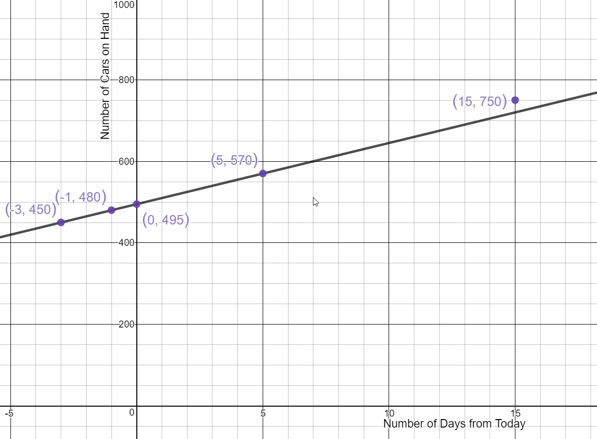
Ally Bank is offering its customers a 2-year Certificate of Deposit (CD) paying 1.29% (APR) with no minimum deposit. Define x to be the amount deposited and y to be the APR.
- Write ordered pairs that would represent depositing $100, $1000, and $5000 in the
CD.
- (100, 1.29), (1000, 1.29), & (5000, 1.29)
- What is the rate of change of the APR?
- \(m=\frac{y_2-y_1}{x_2-x_1}\)
- \(m=\frac{1.29-1.29}{1000-100}\)
- \(m=0\)
- The rate of change of the APR is zero.
- Find the linear equation that represents this problem.
- \(y-y_1=m(x-x_1)\)
- \(y-1.29=0(x-1000)\)
- \(y-1.29=0\)
- \(y=1.29\)
- \(y=1.29\)
- Graph the equation using Desmos.

When Apple stock was first listed on the Nasdaq Stock Exchange on December 2, 1980, the price for one share of stock was $28.75. On June 12, 1995, the day Sam was born, his aunt gave him one share of Apple stock. On that day it was worth $44. On January 14, 2015, one share of Apple stock was selling for $109.01.
Define x to be the number of shares of Apple stock and y to be the value of the stock.
- Write three ordered pairs to represent the value of the stock on these 3
days.
- (1, 28.75), (1, 44), & (1, 109.01)
- Graph these three points in Desmos.
- 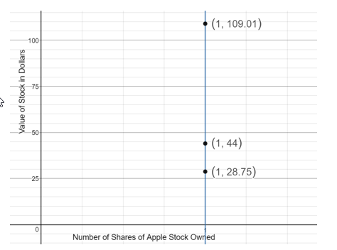
- Write the equation of the line graphed.
- \(x=1\)
- What is the slope of this line?
- The slope of any vertical line is undefined.
- Is this a function? Explain
- This is not a function. A function cannot have the same x value with multiple y values.
For each of the sets of points below, find the slope of the line, the slope intercept form of the line, and the y intercept and the x intercept of the line
- (3, 5) and (-1, 7)
- \(m=\frac{y_2-y_1}{x_2-x_1}\)
- \(m=\frac{7-5}{-1-3}\)
- \(m=-\frac{2}{4}\)
- \(m=-\frac{1}{2}\)
- \(y-y_1=m(x-x_1)\)
- \(y-5=-\frac{1}{2}(x-3)\)
- \(y-5=-\frac{1}{2}x+\frac{3}{2}\)
- \(y=-\frac{1}{2}x+\frac{13}{2}\)
- The y-intercept is (0, 13/2) and the x-intercept is (13, 0).
- (2, 7) and (2, -3)
- \(m=\frac{y_2-y_1}{x_2-x_1}\)
- \(m=\frac{-3-7}{2-2}\)
- \(m=-\frac{10}{0}\)
- \(m=undefined\)
- \(y-y_1=m(x-x_1)\)
- Since the slope is undefined, this is a vertical line.
- \(x=2\)
- There is not an y-intercept and the x-intercept is (2, 0).
- (1, 3) and (0, 3)
- \(m=\frac{y_2-y_1}{x_2-x_1}\)
- \(m=\frac{3-3}{0-1}\)
- \(m=-\frac{0}{0}\)
- \(m=0\)
- \(y-y_1=m(x-x_1)\)
- \(y-3=-0(x-1)\)
- \(y-3=0\)
- \(y=3\)
- The y-intercept is (0, 3) and there is not an x-intercept.
1.2. Systems of Linear Equations
Solve the system of equations using graphing, substitution, and elimination.
- \(\begin{array}{l}2x+y=7\\3x-y=3\end{array}\)

- 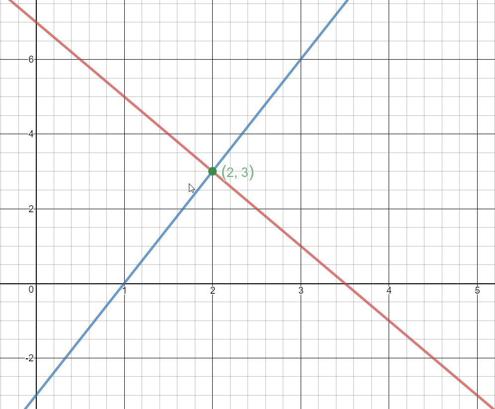
- Elimination
- \(\begin{array}{l}3(2x+y=7)\\2(3x-y=3)\end{array}\)
- \(\begin{array}{l}6x+3y=21\\6x-2y=6\end{array}\)
- \(\begin{array}{l}6x+3y=21\\-6x+2y=-6\end{array}\)
- \(5y=15\)
- \(y=3\)
- Substitute \(y=3\) into one of the original equations to find x.
- \(2x+3=7\)
- \(2x=4\)
- \(x=2\)
- Substitution
- Solve one of the equations for either x or y.
- \(2x+y=7\Rightarrow y=-2x+7\)
- Substitute the new equation into the other original
- \(3x-(-2x+7)=3\)
- \(3x+2x-7=3\)
- \(5x-7=3\)
- \(5x=10\)
- \(x=2\)
- Substitute \(x=2\) into the equation that you solved for y to find y.
- \(y=-2(20)+7\)
- \(y=-4+7\)
- \(y=3\)
- (2,3)
- \(\begin{array}{l}x+2y=3\\2x+3y=4\end{array}\)
- 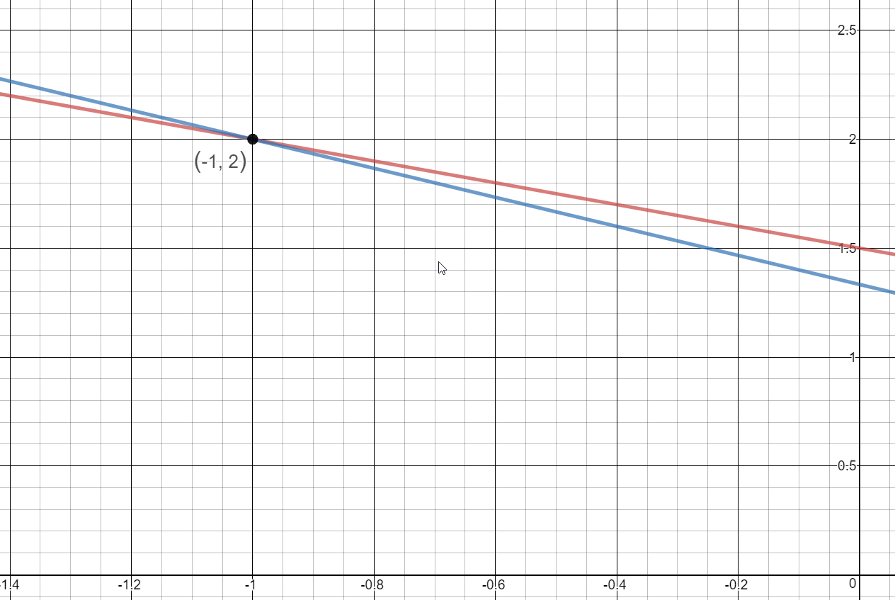
- Elimination
- \(\begin{array}{l}-2(x+2y=3)\\1(2x+3y=4)\end{array}\)
- \(\begin{array}{l}-2x-4y=-6\\2x+3y=4\end{array}\)
- \(-y=-2\)
- \(y=2\)
- Substitute \(y=2\) into one of the original equations to find x.
- \(x+2(2)=3\)
- \(x+4=3\)
- \(x=-1\)
- Substitution
- Solve one of the equations for either x or y.
- \(x+2y=3\Rightarrow x=3-2y\)
- Substitute the new equation into the other original
- \(2(3-2y)+3y=4\)
- \(6-4y+3y=4\)
- \(6-y=4\)
- \(-y=-2\)
- \(y=2\)
- Substitute \(y=2\) into the equation that you solved for x to find x.
- \(x=3-2(2)\)
- \(x=-1\)
- (-1, 2)
The supply curve for a product is \(y=1.5x+10\) and the demand curve for the same product is \(y=-2.5x+34\) , where x is the price and y the number of items produced. Find the following.
- How many items will be supplied at a price of $10?
- \(y=1.5(10)+10\)
- \(y=15+10\)
- \(y=25\)
- At a price of $10, twenty-five items must be supplied.
- How many items will be demanded at a price of $10?
- \(y=-2.5(10)+34\)
- \(y=-25+34\)
- \(y=0\)
- At a price of $10, nine items will be demanded.
- Determine the equilibrium price.
- \(1.5x+10=-2.5x+34\)
- \(4x+10=34\)
- \(4x=24\)
- \(x=6\)
- The supply and the demand will be equal when the price is $6.
- How many items will be produced at the equilibrium price?
- \(y=1.5(6)=10\)
- \(y=9+10\)
- \(y=19\)
- Nineteen items will be produced at the equilibrium price of $6.
If the revenue function of a product is \(R(x)=5x\) and the cost function is \(C(x)=3x+12\), find the following.
- If 4 items are produced, what will the revenue be?
- \(R(4)=5(4)\)
- \(R(4)=20\)
- If four items are produced, the revenue is $20.
- What is the cost of producing 4 items?
- \(C(4)=3(4)+12\)
- \(C(4)=12+12\)
- \(C(4)=24\)
- the cost of producing 4 items is $24.
- How many items should be produced to break-even?
- \(5x=3x+12\)
- \(2x=12\)
- \(x=6\)
- Six items must be produced to break-even.
- What will be the revenue and the cost at the break-even point?
- \(R(6)=5(6)=30\)
- \(C(6)=3(6)+12=30\)
- The revenue and cost will be $30 at the break-even point.
A firm producing flash drives has fixed costs of $10,725, and variable costs of 20 cents per flash drive. The flash drives sell for $1.50 each.
- Find the revenue function.
- \(R(x)=1.50x\)
- Find the cost function
- \(C(x)=10,725+0.20x\)
- Find the break-even point.
- \(1.50x=10,725+0.20x\)
- \(1.30x=10,725\)
- \(x=8250\)
- If the flash drives sell for $1.50 each, then the company must sell 8250 to break-even.
Whackemhard Sports is planning to introduce a new line of tennis rackets. The fixed costs for the new line are $25,000 and the variable costs of producing each racket is $60 and the racket sells for $80.
- Find the cost function.
- \(C(x)=25,000+60x\)
- Find the revenue function.
- \(R(x)=80x\)
- Find the number of rackets that must be sold in order to break-even.
- \(80x=25,000+60x\)
- \(20x=25,000\)
- \(x=1250\)
- To break-even, 1250 rackets must be sold.
1.3. Augmented Matrices
Matrices: Size and position
\(A=\begin{bmatrix}1&-2&6\\5&-4&1\end{bmatrix}\) is a 2 x 3 matrix (# of rows x # of columns)
\(B=\begin{bmatrix}-2&1&0&3\\-6&5&8&1\\0&-2&-3&7\end{bmatrix}\) is a 3 x 4 matrix
Each number in a matrix is an element. The position of each element is given by the row and the column containing the element
In matrix A, the 6 is in position \(a_{13}\)
Given: \(\begin{array}{l}x+3y=7\\3x+4y=11\end{array}\)
- The coefficient matrix is:
- \(\begin{bmatrix}1&3\\3&4\end{bmatrix}\)
- The constant matrix is:
- \(\begin{bmatrix}7\\11\end{bmatrix}\)
- The augmented matrix is:
- \(\left[\left.\begin{array}{cc}1&3\\3&4\end{array}\right|\begin{array}{c}7\\11\end{array}\right]\)
Using Row Operations to Produce Equivalent Matrices Row operations.
- Any two rows can be interchanged.
- Any row many be multiplied by a non-zero constant.
- A constant multiple of a row may be added to another row.
The goal is to produce a matrix in the form \(\left[\left.\begin{array}{cc}1&0\\0&1\end{array}\right|\begin{array}{c}m\\n\end{array}\right]\)
Use matrix operations to solve the augmented matrix.
-
\(\left[\left.\begin{array}{cc}1&3\\3&4\end{array}\right|\begin{array}{c}7\\11\end{array}\right]\)
- \(-3R_1+R_2\rightarrow R_2\)
- \(\left[\left.\begin{array}{cc}1&3\\0&-5\end{array}\right|\begin{array}{c}7\\-10\end{array}\right]\)
- \(-\frac15R_2\rightarrow R_2\)
- \(\left[\left.\begin{array}{cc}1&3\\0&1\end{array}\right|\begin{array}{c}7\\2\end{array}\right]\)
- \(-3R_2+R_1\rightarrow R_1\)
- \(\left[\left.\begin{array}{cc}1&0\\0&1\end{array}\right|\begin{array}{c}1\\2\end{array}\right]\)
- (1, 2)
Use matrix operations to solve the systems of equations.
- \(\begin{array}{l}3x-2y=14\\x+3y=1\end{array}\)
- \(\left[\left.\begin{array}{cc}3&-2\\1&3\end{array}\right|\begin{array}{c}14\\1\end{array}\right]\)
- \(R_1\leftrightarrow R_2\)
- \(\left[\left.\begin{array}{cc}1&3\\3&-2\end{array}\right|\begin{array}{c}1\\14\end{array}\right]\)
- \(-3R_1+R_2\rightarrow R_2\)
- \(\left[\left.\begin{array}{cc}1&3\\0&-11\end{array}\right|\begin{array}{c}1\\11\end{array}\right]\)
- \(-\frac{1}{11}R_2\rightarrow R_2\)
- \(\left[\left.\begin{array}{cc}1&3\\0&1\end{array}\right|\begin{array}{c}1\\-1\end{array}\right]\)
- \(-3R_2+R_1\rightarrow R_1\)
- \(\left[\left.\begin{array}{cc}1&0\\0&1\end{array}\right|\begin{array}{c}4\\-1\end{array}\right]\)
- (4, -1)
- \(\begin{array}{l}-2x+y=-3\\x-4y=-2\end{array}\)
- \(\left[\left.\begin{array}{cc}-2&1\\1&-4\end{array}\right|\begin{array}{c}-3\\-2\end{array}\right]\)
- \(R_1\leftrightarrow R_2\)
- \(\left[\left.\begin{array}{cc}1&-4\\-2&1\end{array}\right|\begin{array}{c}-2\\-3\end{array}\right]\)
- \(2R_1+R_2\rightarrow R_2\)
- \(\left[\left.\begin{array}{cc}1&-4\\0&-7\end{array}\right|\begin{array}{c}-2\\-7\end{array}\right]\)
- \(-\frac{1}{7}R_2\rightarrow R_2\)
- \(\left[\left.\begin{array}{cc}1&-4\\0&1\end{array}\right|\begin{array}{c}-2\\1\end{array}\right]\)
- \(4R_2+R_1\rightarrow R_1\)
- \(\left[\left.\begin{array}{cc}1&0\\0&1\end{array}\right|\begin{array}{c}2\\1\end{array}\right]\)
- (2, 1)
- \(\begin{array}{l}3x-6y=-9\\-2x-2y=12\end{array}\)
- \(\left[\left.\begin{array}{cc}3&-6\\-2&-2\end{array}\right|\begin{array}{c}-9\\12\end{array}\right]\)
- \(\frac{1}{3}R_1\rightarrow R_1\)
- \(\frac{1}{2}R_2\rightarrow R_2\)
- \(\left[\left.\begin{array}{cc}1&-2\\-1&-1\end{array}\right|\begin{array}{c}-3\\6\end{array}\right]\)
- \(R_1+R_2\rightarrow R_2\)
- \(\left[\left.\begin{array}{cc}1&-2\\0&-3\end{array}\right|\begin{array}{c}-3\\3\end{array}\right]\)
- \(-\frac{1}{3}R_2\rightarrow R_2\)
- \(\left[\left.\begin{array}{cc}1&-2\\0&1\end{array}\right|\begin{array}{c}-3\\-1\end{array}\right]\)
- \(2R_2+R_1\rightarrow R_1\)
- \(\left[\left.\begin{array}{cc}1&0\\0&1\end{array}\right|\begin{array}{c}-5\\-1\end{array}\right]\)
- (-5, -1)
- \(\begin{array}{l}2x-y=4\\-6x+3y=-12\end{array}\)
- \(\left[\left.\begin{array}{cc}2&-1\\-6&3\end{array}\right|\begin{array}{c}4\\-12\end{array}\right]\)
- \(\frac{1}{2}R_1\rightarrow R_1\)
- \(\left[\left.\begin{array}{cc}1&-\frac{1}{2}\\-6&3\end{array}\right|\begin{array}{c}2\\-12\end{array}\right]\)
- \(6R_1+R_2\rightarrow R_2\)
- \(\left[\left.\begin{array}{cc}1&-\frac{1}{2}\\0&0\end{array}\right|\begin{array}{c}2\\0\end{array}\right]\)
- Zeros across the bottom indicate an infinite number of solutions.
- Let \(y=t\)
- Then from the first row of the matrix \(2x-t=4\)
- \(2x=t+4\)
- \(x=\frac12t+2\)
- \((\frac12t+2, t)\)
- \(\begin{array}{l}-x+3y=-2\\3x-9y=1\end{array}\)
- \(\left[\left.\begin{array}{cc}-1&3\\3&-9\end{array}\right|\begin{array}{c}-2\\1\end{array}\right]\)
- \(-1R_1\rightarrow R_1\)
- \(\left[\left.\begin{array}{cc}1&-3\\3&-9\end{array}\right|\begin{array}{c}2\\1\end{array}\right]\)
- \(-3R_1+R_2\rightarrow R_2\)
- \(\left[\left.\begin{array}{cc}1&-3\\0&0\end{array}\right|\begin{array}{c}-2\\7\end{array}\right]\)
- \(0\neq7\)
- No solution
1.4. Gauss-Jordan Elimination
A florist is making 5 identical bridesmaid bouquets for a wedding. She has $610 to spend (including tax) and wants 24 flowers for each bouquet. Roses cost $6 each, tulips cost $4 each, and lilies cost $3 each. She wants to have twice as many roses as the other 2 flowers combined in each bouquet. How many roses, tulips, and lilies are in each bouquet?
Reduced Row Echelon Form
- Each row that is entirely zeros is below any row having nonzero element.
- The leftmost element in each row is 1.
- All other elements in the column containing the leftmost 1 are zeros.
- The leftmost 1 in any row is to the right of the leftmost 1 in the row above.
Examples of reduced form matrices.
\(\left[\left.\begin{array}{cc}1&0\\0&1\end{array}\right|\begin{array}{c}5\\-3\end{array}\right]\)
\(\left[\left.\begin{array}{cc}1&0&0\\0&1&0\\0&0&1\end{array}\right|\begin{array}{c}-1\\5\\0.5\end{array}\right]\)
\(\left[\left.\begin{array}{cc}1&0\\0&1\\0&0\end{array}\right|\begin{array}{c}4\\-3\\0\end{array}\right]\)
\(\left[\left.\begin{array}{cc}1&3&0&0\\0&0&1&0\\0&0&0&0\end{array}\right|\begin{array}{c}-1\\5\\0.5\end{array}\right]\)
\(\left[\left.\begin{array}{cc}1&0&4\\0&1&3\\0&0&0\end{array}\right|\begin{array}{c}0\\0\\1\end{array}\right]\)
Gauss-Jordan Elimination transforms an augmented matrix into reduced form using row operations.
Use Gauss-Jordan Elimination to solve the following problems.
-
\(\begin{array}{l}3x_1+x_2-2x_3=2\\x_1-2x_2+x_3=3\\2x_1-x_2-3x_3=3\end{array}\)
- \(\left[\left.\begin{array}{cc}3&1&-2\\1&-2&1\\2&-1&-3\end{array}\right|\begin{array}{c}2\\3\\3\end{array}\right]\)
- \(R_1\leftrightarrow R_2\)
- \(\left[\left.\begin{array}{cc}1&-2&1\\3&1&-2\\2&-1&-3\end{array}\right|\begin{array}{c}3\\2\\3\end{array}\right]\)
- \(-3R_1+R_2\rightarrow R_2\)
- \(-2R_1+R_3\rightarrow R_3\)
- \(\left[\left.\begin{array}{cc}1&-2&1\\0&7&-5\\0&3&-5\end{array}\right|\begin{array}{c}3\\-7\\-3\end{array}\right]\)
- \(\frac17R_2\rightarrow R_2\)
- \(\left[\left.\begin{array}{cc}1&-2&1\\0&1&-\frac57\\0&3&-5\end{array}\right|\begin{array}{c}3\\-1\\-3\end{array}\right]\)
- \(-3R_2+R_3\rightarrow R_3\)
- \(\left[\left.\begin{array}{cc}1&-2&1\\0&1&-\frac57\\0&0&-\frac{20}{7}\end{array}\right|\begin{array}{c}3\\-1\\0\end{array}\right]\)
- \(-\frac{7}{20}R_3\rightarrow R_3\)
- \(\left[\left.\begin{array}{cc}1&-2&1\\0&1&-\frac57\\0&0&1\end{array}\right|\begin{array}{c}3\\-1\\0\end{array}\right]\)
- \(\frac57R_3+R_2\rightarrow R_2\)
- \(\left[\left.\begin{array}{cc}1&-2&1\\0&1&0\\0&0&1\end{array}\right|\begin{array}{c}3\\-1\\0\end{array}\right]\)
- \(-R_3+R_1\rightarrow R_1\)
- \(\left[\left.\begin{array}{cc}1&-2&0\\0&1&0\\0&0&1\end{array}\right|\begin{array}{c}3\\-1\\0\end{array}\right]\)
- \(2R_2+R_1\rightarrow R_1\)
- \(\left[\left.\begin{array}{cc}1&0&0\\0&1&0\\0&0&1\end{array}\right|\begin{array}{c}1\\-1\\0\end{array}\right]\)
- (1, -1, 0)
-
\(\begin{array}{l}3x_1+x_2-2x_3=-7\\2x_1+2x_2+x_3=9\\-1x_1-x_2+3x_3=6\end{array}\)
- \(\left[\left.\begin{array}{cc}3&1&-2\\2&2&1\\-1&-1&3\end{array}\right|\begin{array}{c}-7\\9\\6\end{array}\right]\)
- \(-R_3\leftrightarrow R_1\)
- \(\left[\left.\begin{array}{cc}1&1&-3\\2&2&1\\3&1&-2\end{array}\right|\begin{array}{c}-6\\9\\-7\end{array}\right]\)
- \(-2R_1+R_2\rightarrow R_2\)
- \(-3R_1+R_3\rightarrow R_3\)
- \(\left[\left.\begin{array}{cc}1&1&-3\\0&0&7\\0&-2&7\end{array}\right|\begin{array}{c}-6\\21\\11\end{array}\right]\)
- \(R_3\leftrightarrow R_2\)
- \(\left[\left.\begin{array}{cc}1&1&-3\\0&-2&-7\\0&0&7\end{array}\right|\begin{array}{c}-6\\11\\21\end{array}\right]\)
- \(\frac17R_3\rightarrow R_3\)
- \(\left[\left.\begin{array}{cc}1&1&-3\\0&-2&7\\0&0&1\end{array}\right|\begin{array}{c}-6\\11\\3\end{array}\right]\)
- \(-7R_3+R_2\rightarrow R_2\)
- \(\left[\left.\begin{array}{cc}1&1&-3\\0&-2&0\\0&0&1\end{array}\right|\begin{array}{c}-6\\-10\\3\end{array}\right]\)
- \(-\frac12R_2\rightarrow R_2\)
- \(\left[\left.\begin{array}{cc}1&1&-3\\0&1&0\\0&0&1\end{array}\right|\begin{array}{c}-6\\5\\3\end{array}\right]\)
- \(3R_3+R_1\rightarrow R_1\)
- \(\left[\left.\begin{array}{cc}1&1&0\\0&1&0\\0&0&1\end{array}\right|\begin{array}{c}3\\5\\3\end{array}\right]\)
- \(-R_2+R_1\rightarrow R_1\)
- \(\left[\left.\begin{array}{cc}1&0&0\\0&1&0\\0&0&1\end{array}\right|\begin{array}{c}-2\\5\\3\end{array}\right]\)
- (-2, 5, 3)
-
\(\begin{array}{l}x_1-x_2+2x_3=-1\\-3x_1+3x_2+5x_3=3\\2x_1-2x_2=-2\end{array}\)
- \(\left[\left.\begin{array}{cc}1&-1&2\\-3&3&5\\2&-2&0\end{array}\right|\begin{array}{c}-1\\3\\-2\end{array}\right]\)
- \(3R_1+R_2\rightarrow R_2\)
- \(-2R_1+R_3\rightarrow R_3\)
- \(\left[\left.\begin{array}{cc}1&-1&2\\0&0&11\\0&0&-4\end{array}\right|\begin{array}{c}-1\\0\\0\end{array}\right]\)
- \(-\frac14R_3\rightarrow R_3\)
- \(\left[\left.\begin{array}{cc}1&-1&2\\0&0&11\\0&0&1\end{array}\right|\begin{array}{c}-1\\0\\0\end{array}\right]\)
- \(-R_3+R_2\rightarrow R_2\)
- \(\left[\left.\begin{array}{cc}1&-1&2\\0&0&0\\0&0&1\end{array}\right|\begin{array}{c}-1\\0\\0\end{array}\right]\)
- Infinitely many solutions
- \(x_3=0\)
- \(x_2=t\)
- \(x_1-x_2+2x_3=-1\rightarrow x_1=x_2-2x_3-1\)
- \(x_1=t-2(0)-1\)
- \(x_1=t-1\)
- (t-1, t, 0)
-
\(\begin{array}{l}3x_1+3x_2=-12\\-4x_1-2x_2+2x_3=-14\\x_1+3x_2+2x_3=11\end{array}\)
- \(\left[\left.\begin{array}{cc}3&3&0\\-4&-2&2\\1&3&2\end{array}\right|\begin{array}{c}-12\\-14\\11\end{array}\right]\)
- \(-\frac13R_1\rightarrow R_1\)
- \(\left[\left.\begin{array}{cc}1&1&0\\-4&-2&2\\1&3&2\end{array}\right|\begin{array}{c}-4\\-14\\11\end{array}\right]\)
- \(4R_1+R_2\rightarrow R_2\)
- \(-R_1+R_3\rightarrow R_3\)
- \(\left[\left.\begin{array}{cc}1&1&0\\0&2&2\\0&2&2\end{array}\right|\begin{array}{c}-4\\-30\\15\end{array}\right]\)
- \(-R_2+R_3\rightarrow R_3\)
- \(\left[\left.\begin{array}{cc}1&1&0\\0&2&2\\0&0&0\end{array}\right|\begin{array}{c}-4\\-30\\45\end{array}\right]\)
- \(0\neq45\)
- No solution
- A florist is making 5 identical bridesmaid bouquets for a wedding. She has $610 to
spend (including tax) and wants 24 flowers for each bouquet. Roses cost $6 each, tulips cost $4 each,
and lilies cost $3 each. She wants to have twice as many roses as the other 2 flowers combined in each
bouquet. How many roses, tulips, and lilies are in each bouquet?
- Let \(x_1=\)the number of roses, \(x_2=\)the number of tulips, and \(x_3=\)the number of lilies.
- \(\begin{array}{l}x_1+x_2+x_3=120\\6x_1+4x_2+3x_3=610\\x_1=2(x_2+x_3)\end{array}\)
- \(\begin{array}{l}x_1+x_2+x_3=120\\6x_1+4x_2+3x_3=610\\x_1-2x_2-2x_3=0\end{array}\)
- \(\left[\left.\begin{array}{cc}1&1&1\\6&4&3\\1&-2&-2\end{array}\right|\begin{array}{c}120\\610\\0\end{array}\right]\)
- \(-6R_1+R_2\rightarrow R_2\)
- \(R_1-R_3\rightarrow R_3\)
- \(\left[\left.\begin{array}{cc}1&1&1\\0&-2&-3\\0&3&3\end{array}\right|\begin{array}{c}120\\-110\\120\end{array}\right]\)
- \(\frac13R_3\leftrightarrow R_3\)
- \(\left[\left.\begin{array}{cc}1&1&1\\0&-2&-3\\0&1&1\end{array}\right|\begin{array}{c}120\\-110\\40\end{array}\right]\)
- \(2R_3+R_2\rightarrow R_3\)
- \(\left[\left.\begin{array}{cc}1&1&1\\0&-2&-3\\0&0&-1\end{array}\right|\begin{array}{c}120\\-110\\-30\end{array}\right]\)
- \(-R_3\leftrightarrow R_3\)
- \(\left[\left.\begin{array}{cc}1&1&1\\0&-2&-3\\0&0&1\end{array}\right|\begin{array}{c}120\\-110\\30\end{array}\right]\)
- \(3R_3+R_2\rightarrow R_2\)
- \(\left[\left.\begin{array}{cc}1&1&1\\0&-2&0\\0&0&1\end{array}\right|\begin{array}{c}120\\-20\\30\end{array}\right]\)
- \(-\frac12R_2\leftrightarrow R_2\)
- \(\left[\left.\begin{array}{cc}1&1&1\\0&1&0\\0&0&1\end{array}\right|\begin{array}{c}120\\10\\30\end{array}\right]\)
- \(R_1-R_3\rightarrow R_1\)
- \(\left[\left.\begin{array}{cc}1&1&0\\0&1&0\\0&0&1\end{array}\right|\begin{array}{c}90\\10\\30\end{array}\right]\)
- \(R_1-R_2\rightarrow R_1\)
- \(\left[\left.\begin{array}{cc}1&0&0\\0&1&0\\0&0&1\end{array}\right|\begin{array}{c}80\\10\\30\end{array}\right]\)
- The florist needs 80 roses, 10 tulips, and 30 lilies.
- An apple, a banana and three oranges or two apples, two bananas, and an orange, or
four bananas and two oranges cost $2. Find the price of each.
- Let \(x_1=\)the number of apples, \(x_2=\)the number of bananas, and \(x_3=\)the number of oranges.
- \(\begin{array}{l}x_1+x_2+3x_3=2\\2x_1+2x_2+x_3=2\\4x_2+2x_3=2\end{array}\)
- \(\left[\left.\begin{array}{cc}1&1&3\\2&2&1\\0&4&2\end{array}\right|\begin{array}{c}2\\2\\2\end{array}\right]\)
- \(-2R_1+R_2\rightarrow R_2\)
- \(\left[\left.\begin{array}{cc}1&1&3\\0&0&-5\\0&4&2\end{array}\right|\begin{array}{c}2\\-2\\2\end{array}\right]\)
- \(R_2\leftrightarrow R_3\)
- \(\left[\left.\begin{array}{cc}1&1&3\\0&4&2\\0&0&-5\end{array}\right|\begin{array}{c}2\\2\\-2\end{array}\right]\)
- \(-\frac15R_3\leftrightarrow R_3\)
- \(\left[\left.\begin{array}{cc}1&1&3\\0&4&2\\0&0&1\end{array}\right|\begin{array}{c}2\\2\\.40\end{array}\right]\)
- \(-2R_3+R_2\rightarrow R_2\)
- \(\left[\left.\begin{array}{cc}1&1&3\\0&4&0\\0&0&1\end{array}\right|\begin{array}{c}2\\1.20\\.40\end{array}\right]\)
- \(\frac14R_2\leftrightarrow R_2\)
- \(\left[\left.\begin{array}{cc}1&1&3\\0&1&0\\0&0&1\end{array}\right|\begin{array}{c}2\\.30\\.40\end{array}\right]\)
- \(-3R_3+R_1\rightarrow R_1\)
- \(\left[\left.\begin{array}{cc}1&1&0\\0&1&0\\0&0&1\end{array}\right|\begin{array}{c}.80\\.30\\.40\end{array}\right]\)
- \(R_1-R_2\rightarrow R_1\)
- \(\left[\left.\begin{array}{cc}1&0&0\\0&1&0\\0&0&1\end{array}\right|\begin{array}{c}.50\\.30\\.40\end{array}\right]\)
- Apples are 50 cents each, bananas are 30 cents each, and oranges are 40 cents each.
- A company that rents small moving trucks wants to purchase 25 trucks with a
combined capacity of 28,000 cubic feet. Three different types of trucks are available: a 10-foot truck
with a capacity of 350 cubic feet, a 14-foot truck with a capacity of 700 cubic feet, and a 24-foot
truck with a capacity of 1,400 cubic feet. How many of each type of truck should the company purchase?
- Let \(x_1=\)the number of 10-ft trucks, \(x_2=\)the number of 14-ft trucks, and \(x_3=\)the number of 24-ft trucks.
- \(\begin{array}{l}x_1+x_2+x_3=25\\350x_1+700x_2+1400x_3=28,000\end{array}\)
- \(\left[\left.\begin{array}{cc}1&1&1\\350&700&1400\end{array}\right|\begin{array}{c}25\\28,000\end{array}\right]\)
- \(\frac{1}{350}R_2\leftrightarrow R_2\)
- \(\left[\left.\begin{array}{cc}1&1&1\\1&2&4\end{array}\right|\begin{array}{c}25\\80\end{array}\right]\)
- \(R_1-R_2\rightarrow R_2\)
- \(\left[\left.\begin{array}{cc}1&1&1\\0&1&3\end{array}\right|\begin{array}{c}25\\55\end{array}\right]\)
- Let \(x_3=t\), so from the 2nd row in the matrix we get
- \(x_2+3x_3=55\)
- \(x_2+3t=55\)
- \(x_2=-3t+55\)
- \(-3t+55\geq 0\)
- \(-3t\geq -55\)
- \(t\leq18.3\)
- From the first row of the matrix we get \(x_1+x_2+x_3=25\)
- \(x_1+(-3t+55)+t=25\)
- \(x_1-2t+55=25\)
- \(x_1=2t-30\)
- \(2t-30\geq 0\)
- \(2t\geq 30\)
- \(t\geq 15\)
- Therefore, \(15\leq t \leq 18.33\)
- Since \(x_3=t\), we can have 15, 16, 17, or 18 24-ft trucks.
- Since \(x_2=-3x_3+55\) and \(x_1=2x_3-30\), we must calculate how many 14-ft and 10-ft trucks based on each of these possibilities.
- If we have 15 24-ft trucks, we must have 10 14-ft trucks and 0 10-ft trucks. If we have 16 24-ft trucks, we must have 7 14-ft trucks and 2 10-ft trucks. If we have 17 24-ft trucks, we must have 4 14-ft trucks and 4 10-ft trucks. If we have 18 24-ft trucks, we must have 1 14-ft trucks and 6 10-ft trucks.
1.5. Operations with Matrices
Adding, Subtracting, and Scalar Multiplication of Matrices
Notes
We can multiply any matrix by a scalar (a constant number).
Matrices must be the same size to add or subtract.
Fine Furniture Company makes chairs and tables at its San Jose, Hayward, and Oakland factories. The total production, in hundreds, from the three factories for the years 2014 and 2015 is listed in the table below.
| 2014 | 2015 | |||
| Chairs | Tables | Chairs | Tables | |
| San Jose | 30 | 18 | 36 | 20 |
|---|---|---|---|---|
| Hayward | 20 | 12 | 24 | 18 |
| Oakland | 16 | 10 | 20 | 12 |
- Represent the production for the years 2014 and 2015 as the matrices A and
B.
-
\(A=\begin{bmatrix}30&18\\20&12\\16&10\end{bmatrix}\)
\(B=\begin{bmatrix}36&20\\24&18\\20&12\end{bmatrix}\)
-
- Find the difference in production between 2014 and 2015.
- \(B-A=\begin{bmatrix}36-30&20-18\\24-20&18-12\\20-16&12-10\end{bmatrix}\)
- \(B-A=\begin{bmatrix}6&2\\4&6\\4&2\end{bmatrix}\)
- The company predicts that in the year 2020 the production at these facilities will
double the production in 2014. What will the expected production be for 2020?
- \(2A=\begin{bmatrix}2*30&2*18\\2*20&2*12\\2*16&2*10\end{bmatrix}\)
- \(2A=\begin{bmatrix}60&36\\40&24\\32&20\end{bmatrix}\)
Given the matrices A, B, C, and D
,\(A=\begin{bmatrix}1&2&4\\2&3&1\\5&0&3\end{bmatrix}\;\;\;B=\begin{bmatrix}2&-1&3\\2&4&2\\3&6&1\end{bmatrix}\;\;\;C=\begin{bmatrix}4\\2\\3\end{bmatrix}\;\;\;D=\begin{bmatrix}-2\\-3\\4\end{bmatrix}\)
Find if possible,
- \(A+B\)
- \(A+B=A=\begin{bmatrix}1+2&2-1&4+3\\2+2&3+4&1+2\\5+3&0+6&3+1\end{bmatrix}\)
- \(A+B=\begin{bmatrix}3&1&7\\4&7&3\\8&6&4\end{bmatrix}\)
- \(C-D\)
- \(C-D=\begin{bmatrix}4+2\\2+3\\3-4\end{bmatrix}\)
- \(C-D=\begin{bmatrix}6\\5\\-1\end{bmatrix}\)
- \(A+D\)
- A & D are not the same size.
- undefined
- \(-3C\)
- \(-3C=\begin{bmatrix}-3*4\\-3*2\\-3*3\end{bmatrix}\)
- \(-3C=\begin{bmatrix}-12\\-6\\-9\end{bmatrix}\)
Multiplication of Two Matrices
In order to multiply two matrices, the number of columns in the first matrix MUST equal the number of rows in the second.
- Find the product AB given \(A=\begin{bmatrix}2&3&4\end{bmatrix}\) and
\(B=\begin{bmatrix}5\\6\\7\end{bmatrix}\)
- A=1x3 and B=3x1 so AB=1x1
- \(AB=\begin{bmatrix}2*5+3*6+4*7\end{bmatrix}\)
- \(AB=\begin{bmatrix}10+18+28\end{bmatrix}\)
- \(AB=\begin{bmatrix}56\end{bmatrix}\)
- Find the product AB given \(A=\begin{bmatrix}2&3&4\end{bmatrix}\) and
\(B=\begin{bmatrix}5&3\\6&4\\7&5\end{bmatrix}\)
- A=1x3 and B=3x2 so AB=1x2
- \(AB=\begin{bmatrix}2*5+3*6+4*7&2*3+3*4+4*5\end{bmatrix}\)
- \(AB=\begin{bmatrix}10+18+28&6+12+20\end{bmatrix}\)
- \(AB=\begin{bmatrix}56&38\end{bmatrix}\)
- Find the product AB given
\(A=\begin{bmatrix}2&3&4\\1&2&3\end{bmatrix}\) and
\(B=\begin{bmatrix}5&3\\6&4\\7&5\end{bmatrix}\)
- A=2x3 and B=3x2 so AB=2x2
- \(AB=\begin{bmatrix}2*5+3*6+4*7&2*3+3*4+4*5\\1*5+2*6+3*7&1*3+2*4+3*5\end{bmatrix}\)
- \(AB=\begin{bmatrix}10+18+28&6+12+20\\5+12+21&3+8+15\end{bmatrix}\)
- \(AB=\begin{bmatrix}56&38\\38&26\end{bmatrix}\)
Given the matrices E, F, G, and H, find the following, if possible.
\(E=\begin{bmatrix}1&2\\4&2\\3&1\end{bmatrix}\;\;\;F=\begin{bmatrix}2&-1\\3&2\end{bmatrix}\;\;\;G=\begin{bmatrix}4&1\end{bmatrix}\;\;\;H=\begin{bmatrix}-3\\-1\end{bmatrix}\)
- EF
- (3x2)(2x2)=(3x2)
- \(EF=\begin{bmatrix}1*2+2*3&1*-1+2*2\\4*2+2*3&4*-1+2*2\\3*2+1*3&3*-1+1*2\end{bmatrix}\)
- \(EF=\begin{bmatrix}2+6&-1+4\\8+6&-4+4\\6+3&-3+2\end{bmatrix}\)
- \(EF=\begin{bmatrix}8&3\\14&0\\9&-1\end{bmatrix}\)
- FE
- (2x2)(3x2)
- Cannot multiply these matrices.
- FH
- (2x2)(2x1)=2x1
- \(FH=\begin{bmatrix}2*-3+-1*-1\\3*-3+2*-1\end{bmatrix}\)
- \(FH=\begin{bmatrix}-6+1\\-9-2\end{bmatrix}\)
- \(FH=\begin{bmatrix}-5\\-11\end{bmatrix}\)
- GH
- (1x2)(2x1)=1x1
- \(GH=\begin{bmatrix}4*-3+1*-1\end{bmatrix}\)
- \(G=\begin{bmatrix}-12-1\end{bmatrix}\)
- \(GH=\begin{bmatrix}-13\end{bmatrix}\)
1.6. Inverse Matrices
Definition of an Inverse:
An \(n x n\) matrix has an inverse if there exists a matrix B such that \(AB=BA=I_n\), where \(n\) is an \(n x n\) identity matrix. The inverse of a matrix A, if it exists, is denoted by the symbol \(A^{-1}\).For the inverse to exist, the matrix must be square.
The identity matrix is a square matrix with 1’s on the diagonal and 0’s everywhere else.
i. e. \(\begin{bmatrix}1&0&0\\0&1&0\\0&0&1\end{bmatrix}\)
Given matrices A & B below, verify that they are inverses (remember to check both ways AB and BA)
\(A=\begin{bmatrix}4&1\\3&1\end{bmatrix}\) and \(B=\begin{bmatrix}1&-1\\-3&4\end{bmatrix}\)
.- AB
- \(\begin{bmatrix}4&1\\3&1\end{bmatrix}*\begin{bmatrix}1&-1\\-3&4\end{bmatrix}\)
- \(\begin{bmatrix}4*1+1*-3&4*-1+1*4\\3*1+1*-3&3*-1+1*4\end{bmatrix}\)
- \(\begin{bmatrix}4-3&-4+4\\3-3&-3+4\end{bmatrix}\)
- \(\begin{bmatrix}1&0\\0&1\end{bmatrix}\)
- BA
- \(\begin{bmatrix}1&-1\\-3&4\end{bmatrix}*\begin{bmatrix}4&1\\3&1\end{bmatrix}\)
- \(\begin{bmatrix}1*4-1*3&1*1-1*1\\-3*4+4*3&-3*1+4*1\end{bmatrix}\)
- \(\begin{bmatrix}4-3&1-1\\-12+12&-3+4\end{bmatrix}\)
- \(\begin{bmatrix}1&0\\0&1\end{bmatrix}\)
Find the inverse of each the following matrices.
- \(A=\begin{bmatrix}3&1\\5&2\end{bmatrix}\)
- \(\left[\begin{array}{cc}3&1\\5&2\end{array}\left|\begin{array}{cc}1&0\\0&1\end{array}\right.\right]\)
- \(\frac13R_1\rightarrow R_1\)
- \(\left[\begin{array}{cc}1&\frac13\\5&2\end{array}\left|\begin{array}{cc}\frac13&0\\0&1\end{array}\right.\right]\)
- \(-5R_1+R_2\rightarrow R_2\)
- \(\left[\begin{array}{cc}1&\frac13\\0&\frac13\end{array}\left|\begin{array}{cc}\frac13&0\\-\frac53&3\end{array}\right.\right]\)
- \(3R_2\rightarrow R_2\)
- \(\left[\begin{array}{cc}1&\frac13\\0&1\end{array}\left|\begin{array}{cc}\frac13&0\\-5&3\end{array}\right.\right]\)
- \(-\frac13R_2+R_1\rightarrow R_1\)
- \(\left[\begin{array}{cc}1&0\\0&1\end{array}\left|\begin{array}{cc}2&-1\\-5&3\end{array}\right.\right]\)
- \(\left[\begin{array}{cc}1&0\\0&1\end{array}\left|\begin{array}{cc}2&-1\\-5&3\end{array}\right.\right]\)
-
\(A=\begin{bmatrix}1&-1&1\\2&3&0\\0&-2&1\end{bmatrix}\)
- \(\left[\begin{array}{cc}1&-1&1\\2&3&0\\0&-2&1\end{array}\left|\begin{array}{cc}1&0&0\\0&1&0\\0&0&1\end{array}\right.\right]\)
- \(-2R_1+R_2\rightarrow R_2\)
- \(\left[\begin{array}{cc}1&-1&1\\0&-5&-2\\0&-2&1\end{array}\left|\begin{array}{cc}1&0&0\\-2&1&0\\0&0&1\end{array}\right.\right]\)
- \(\frac15R_2\rightarrow R_2\)
- \(\left[\begin{array}{cc}1&-1&1\\0&1&-\frac25\\0&-2&1\end{array}\left|\begin{array}{cc}1&0&0\\-\frac25&\frac15&0\\0&0&1\end{array}\right.\right]\)
- \(2R_2+R_3\rightarrow R_3\)
- \(\left[\begin{array}{cc}1&-1&1\\0&1&-\frac25\\0&0&\frac15\end{array}\left|\begin{array}{cc}1&0&0\\-\frac25&\frac15&0\\-\frac45&\frac25&1\end{array}\right.\right]\)
- \(5R_3\rightarrow R_3\)
- \(\left[\begin{array}{cc}1&-1&1\\0&1&-\frac25\\0&0&1\end{array}\left|\begin{array}{cc}1&0&0\\-\frac25&\frac15&0\\-4&2&5\end{array}\right.\right]\)
- \(\frac25R_3+R_2\rightarrow R_2\)
- \(\left[\begin{array}{cc}1&-1&1\\0&1&0\\0&0&1\end{array}\left|\begin{array}{cc}1&0&0\\-2&1&2\\-4&2&5\end{array}\right.\right]\)
- \(-R_3+R_1\rightarrow R_1\)
- \(\left[\begin{array}{cc}1&-1&0\\0&1&0\\0&0&1\end{array}\left|\begin{array}{cc}5&-2&-5\\-2&1&2\\-4&2&5\end{array}\right.\right]\)
- \(R_1+R_2\rightarrow R_1\)
- \(\left[\begin{array}{cc}1&0&0\\0&1&0\\0&0&1\end{array}\left|\begin{array}{cc}3&-1&-3\\-2&1&2\\-4&2&5\end{array}\right.\right]\)
- \(\left[\begin{array}{cc}1&0&0\\0&1&0\\0&0&1\end{array}\left|\begin{array}{cc}3&-1&-3\\-2&1&2\\-4&2&5\end{array}\right.\right]\)
2. Linear Programming
2.1. Linear Inequalities in Two Variables
The dean of Transitional Studies decides to give all students who exit the program PSCC memorabilia. Each student who successfully completes the program will receive a 3/4” Platinum Woven Lanyard or a Key Tag. The lanyards are $5 and the key tags are $7. If the dean has $3500 left to spend for the fiscal year. How many of each item can be purchased without going over budget?
- Write an inequality in standard form that represents the situation.
- x= # of lanyards
- y= # of keytags
- \(5x+7y\leq3500\)
- \(5x+7y\leq3500\)
- Use the following grid to graph the inequality by finding the x- and y- intercepts
and use the origin as a possible test point to identify the appropriate region.
- \(y-intercept: (0, 500), x-intercept: (700, 0)\)
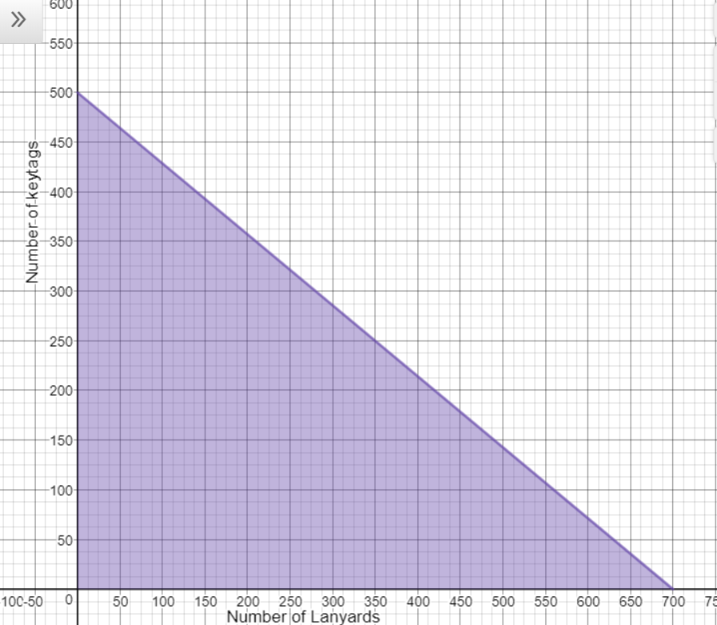
- \(y-intercept: (0, 500), x-intercept: (700, 0)\)
- How many of each item can be purchased without going over?
- You can purchase 500 key tags and 0 lanyards or 700 lanyards and 0 key tags and not go over. You can also purchase some combination of the two that falls within the shade region.
- Graph \(6x+7y>42\) using two intercepts and shade the appropriate region.
- Intercepts: (0, 6) & (7, 0)
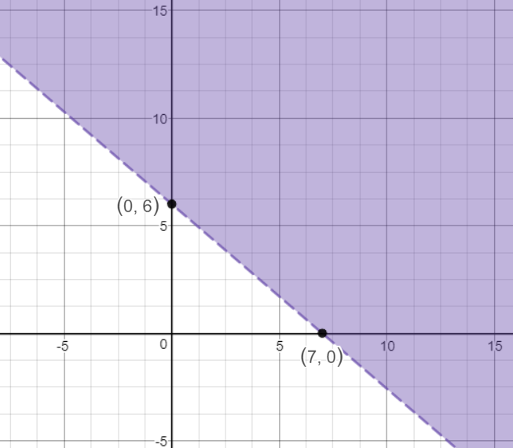
- Intercepts: (0, 6) & (7, 0)
- Graph \(3x-10y\leq -30\) using two intercepts and shade the appropriate region.
- Intercepts: (0, 3) & (-10, 0)
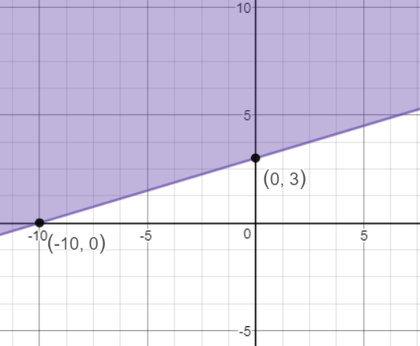
- Intercepts: (0, 3) & (-10, 0)
Jaron receives a gift card with a $130 balance. He uses the card to buy lunch at the school cafeteria, where he spends on average $6.50 a day.
- Write an inequality in slope – intercept form that represents the amount of money
he has left to spend.
- x=number of days
- y=balance on the gift card
- \(y\leq 130-6.50x\)
- Use the following grid to graph the inequality by plotting the y-intercept and
using the slope to find a second point. Use the origin as a possible test point to identify the
appropriate region to shade.
- y-intercept:(0, 130) & m=-6.50
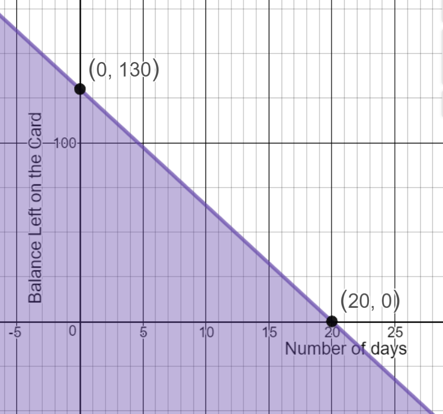
- y-intercept:(0, 130) & m=-6.50
- Use the graph to determine the number of days Jaron can use the card.
- It will take Jaron 20 days to use all the money on is card.
- Does the ordered pair \((24, -26)\) satisfy the inequality? Justify your answer.
Explain what this would mean in the context of the problem.
- Technically, (24, -26) does satisfy the inequality. In this problem, that would mean that Jaron used the card for 24 days and owes the cafeteria $26 which means he probably didn't eat on days 21-24.
- Graph \(y>\frac72x+7\) and shade the appropriate region.
- y-intercept:(0, 7) & m=7/2

- y-intercept:(0, 7) & m=7/2
- Graph \(y\leq-\frac37x+6\) and shade the appropriate region.
- y-intercept:(0, 6) & m=-3/7
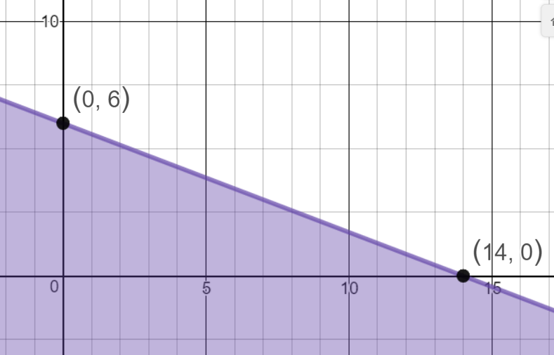
- y-intercept:(0, 6) & m=-3/7
Special cases:
Use the following points for the next 5 problems.\((3, -2), (3, -1), (3, 0), (3, 1)\)
- Plot the given points.
-
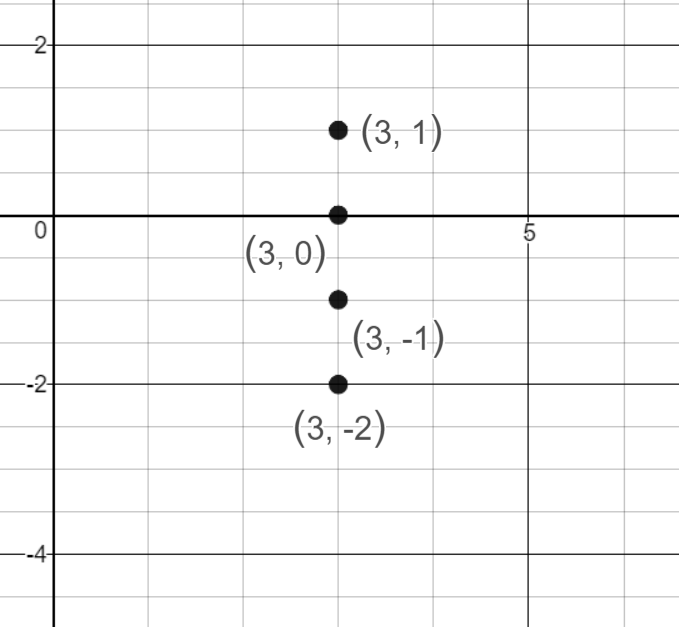
-
- Ordered pairs are written in the form (x, y). What do you notice about the ordered
pairs in this problem?
- All the x values are the same.
- When the value of one of the variables in a set of ordered pairs is constant, it
indicates a special type of line. What type of line is formed from the graph of these ordered pairs in
the xy-plane?
- A vertical line is formed.
- The equation of this line is identified by the constant value in the ordered
pairs. Write the equation of this line.
- \(x=3\)
- An inequality results when the equal symbol is replaced with one of the four
inequality symbols \(<, >, \leq, \geq\). Use the inequality symbol \(leq\) to rewrite your
equation in part (c) as an inequality, and then shade the appropriate region to represent the graph of
this inequality.
- \(x\leq3\)
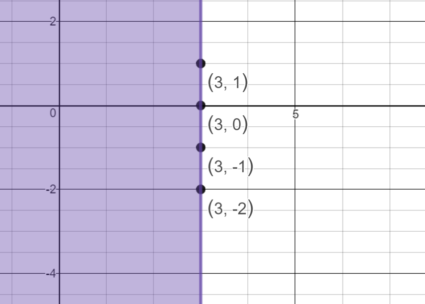
- \(x\leq3\)
Special cases:
Use the following points for the next 5 problems.\((-4, 1), (-2, 1), (0, 1), (3, 1)\)
- Plot the given points.
-
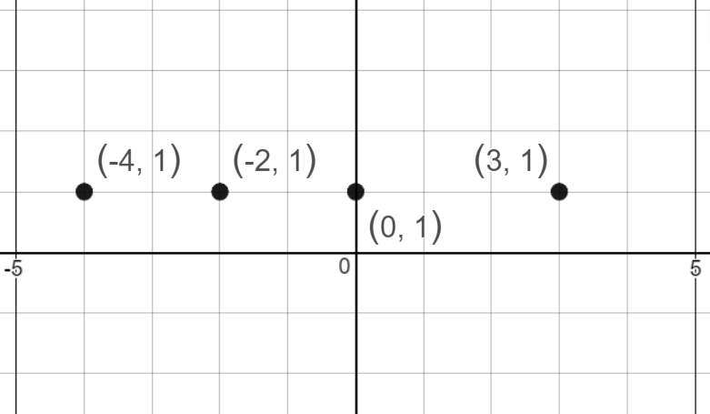
-
- Ordered pairs are written in the form (x, y). What do you notice about the ordered
pairs in this problem?
- The y values are the same.
- When the value of one of the variables in a set of ordered pairs is constant, it
indicates a special type of line. What type of line is formed from the graph of these ordered pairs in
the xy-plane?
- A horizontal line is formed.
- The equation of this line is identified by the constant value in the ordered
pairs. Write the equation of this line.
- \(y=1\)
- An inequality results when the equal symbol is replaced with one of the four
inequality symbols \(<, >, \leq, \geq\). Use the inequality symbol \(>\) to rewrite your
equation in part (c) as an inequality, and then shade the appropriate region to represent the graph of
this inequality.
- \(y>1\)
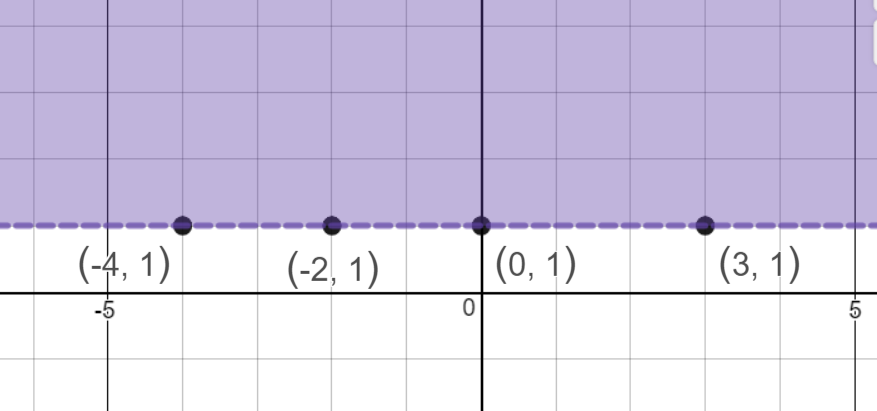
- \(y>1\)
Additional Problems
- The local boys and girls club purchased some child and adult tickets from the
local movie theater to give away at an event. Child tickets are $6.50 each and adult tickets are $7.50
each. The club spent no more than $72.
Write an inequality that represents the problem. (Use the standard variables x and y and assume x ≥ 0 and y ≥ 0.)
- x= # of child tickets sold
- y= # of adult tickets sold
- \(6.5x+7.5y\leq72\)
- Graph the inequality from the previous problem.
- 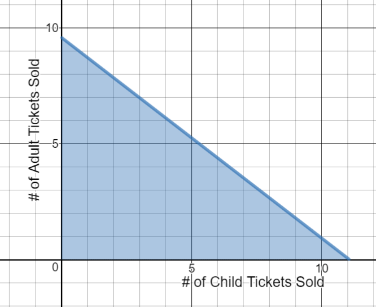
- Graph \(y>\frac32x-9\)
- 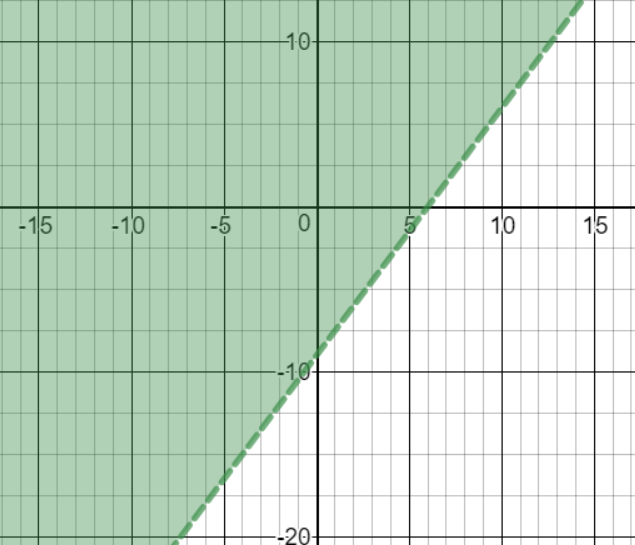3/2x-9 shaded above the line.">
- Graph \(2x-3\leq 9\)
- 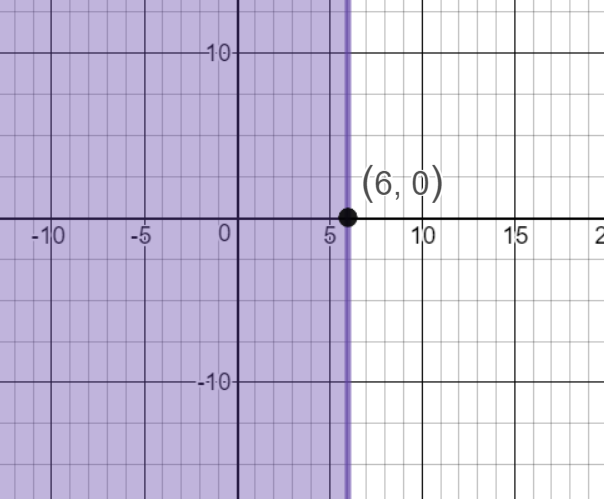
2.2. Systems of Linear Inequalities
Solve each system graphically (using Desmos) and indicate whether each solution region is bounded or unbounded. Find the coordinates of the corner points.
-
\(\begin{array}{l}2x+y\leq22\\x+y\leq13\\2x+5y\leq50\\x\geq0\\y\geq0\end{array}\)
- Bounded
- Corner Points: (0,10), (0,0), (11,0), (5,8), & (9,4)
- 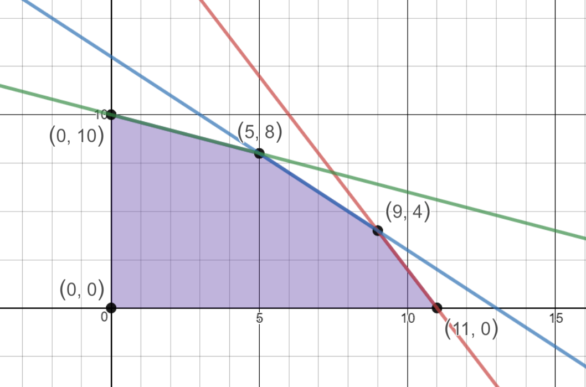=0, and y>=0. Region is bounded by the x-axis on the bottom and the y-axis on the left. It is bounded above by 2x+5y<=50 from x=0 to x=5, by x+y<=13 from x=5 to x=9, and by 2x+y<=22 from x=9 to x=11.">
-
\(\begin{array}{l}5x+y\geq20\\x+y\geq12\\x+3y\geq18\\x\geq0\\y\geq0\end{array}\)
- Unbounded
- Corner Points: (0,20), (18,0), (2,10), & (9,3)
- 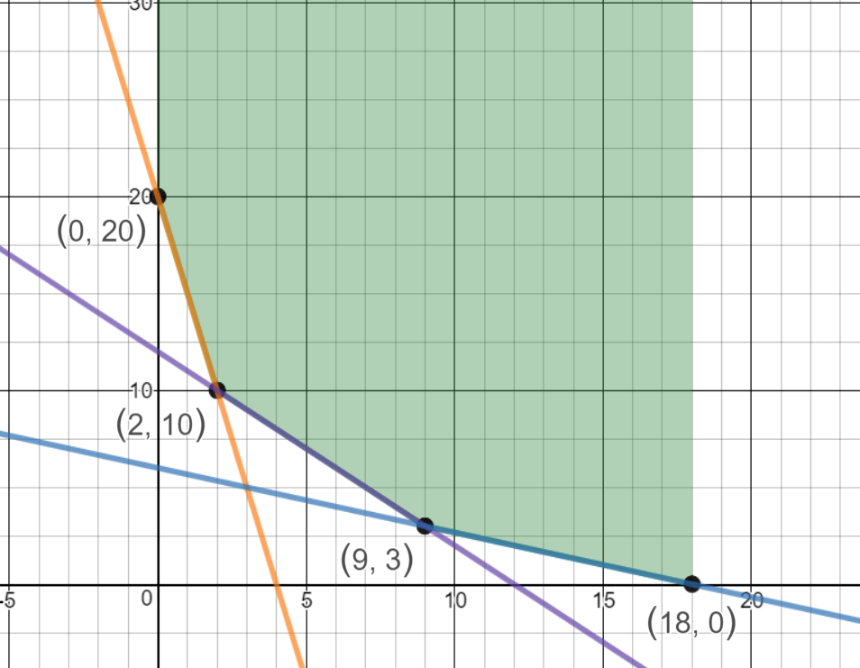=20, x+y>=12, x+3y>=18, x>=0, and y>=0. The unbounded region is shaded above 5x+y>=20 from x=0 to x=2, by x+y>=12 from x=2 to x=9, and by x+3y>=18 from x=9 to x=18.">
- A manufacturer of surfboards makes a standard model and a competition model. Each
standard board required 6 labor-hours for fabricating and 1 labor-hour for finishing. Each competition
board requires 8 labor-hours for fabricating and 3 labor-hours for finishing. The maximum labor-hours
available per week in the fabricating and finishing departments are 120 and 30, respectively. What
combination of boards can be produced each week so as not to exceed the number of labor-hours available
in each department?
- x: number of standard surfboards
- y: number of competition surfboards
- \(6x+8y\leq 120\)
- \(1x+3y\leq 30\)
- \(x\geq0\)
- \(y\geq0\)
- Corner Points: (0,10), (20,0), and (12,6)
- 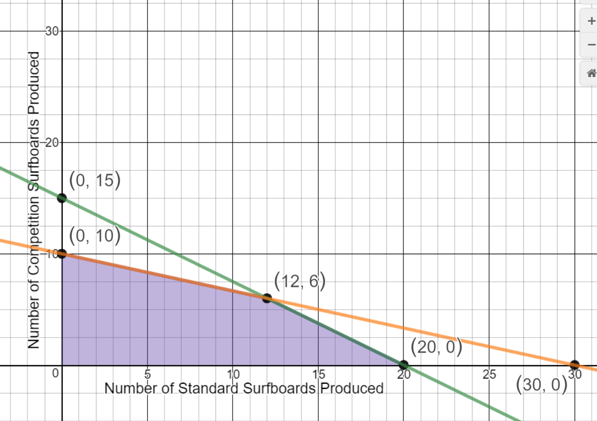=0, and y>=0. The bounded region is shaded below 6x+8y<=120 from x=0 to x=12, by x+3y<=30 from x=12 to x=20.">
- The combination of boards that can be produced so as not to exceed the hours available are 20 standard and no competition boards, 10 competition and no standard boards, or 12 standard and 6 competition boards.
- A city council voted to conduct a study on inner-city community problems. A nearby
university was contracted to provide sociologists and research assistants. Each sociologist will spend
10 hours per week collecting data in the field and 30 hours per week analyzing data in the research
center. Each research assistant will spend 30 hours per week in the field and 10 hours per week in the
research center. The minimum weekly labor-hour requirements are 280 hours in the field and 360 hours in
the research center. Find the set of feasible solutions graphically.
- x: number of sociologists
- y: number of assistants
- \(10x+30y\geq 280\)
- \(30x+10y\geq 360\)
- Corner Points: (0,36), (28,0), and (10,6)
- 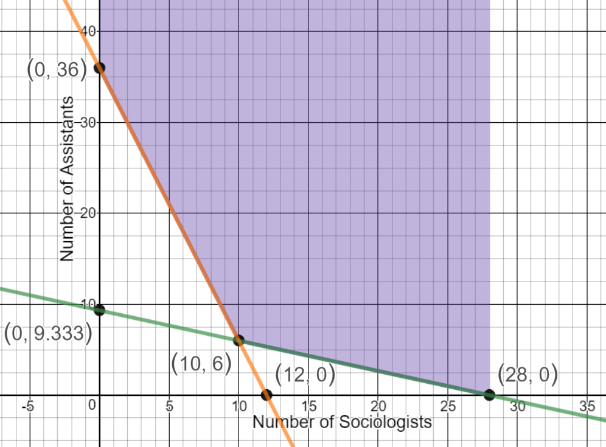=360 and to the right of 10x+30y>=280. The unbounded region is shaded above 30x+10y>=360 from from x=0 to x=10 and above 10x+30y>=280 from x=10 to x=28.">
- A dietitian in a hospital is to arrange a special diet using two foods. Each ounce
of food M contains 30 units of calcium, 10 units of iron, and 10 units of vitamin A. Each ounce of food
N contains 10 units of calcium, 10 units of iron, and 30 units of vitamin A. The minimum requirements in
the diet are 360 units of calcium, 160 units of iron, and 240 units of vitamin A. Find the set of
feasible solutions graphically.
- x: ounces of food M
- y: ounces of food N
- \(30x+10y\geq 360\)
- \(10x+10y\geq 160\)
- \(10x+30y\geq 240\)
- Corner Points: (0,36), (24,0), (10,6), and (12,4)

- A furniture manufacturing company makes dining room tables and chairs. A table
requires 8 hours for assembling and 2 hours for finishing. A chair requires 2 hours for assembling and 1
hour for finishing. The maximum hours per day for assembly and finishing are 400 and 120 hours,
respectively. Find the set of feasible solutions graphically.
- x: # of tables
- y: # of chairs
- \(8x+2y\leq 400\)
- \(2x+1y\leq 120\)
- \(x\geq0\)
- \(y\geq0\)
- Corner Points: (0,120), (50,0), and (40,40)
- 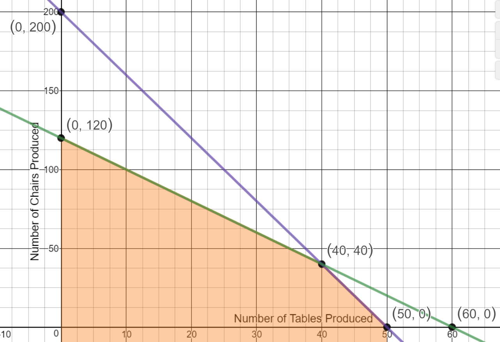=0, and y>=0. The bounded region is shaded below 2x+y<=120 from x=0 to x=40, by 8x+2y<=400 from x=40 to x=50.">
2.3. Linear Programming in Two Variables
- Niki holds two part-time jobs, Job I and Job II. She never wants to work more than
a total of 12 hours a week. She has determined that for every hour she works at Job I, she needs 2 hours
of preparation time, and for every hour she works at Job II, she needs one hour of preparation time, and
she cannot spend more than 16 hours for preparation. If she makes $40 an hour at Job I, and $30 an hour
at Job II, how many hours should she work per week at each job to maximize her income?
- x: # of hours worked at Job 1
- y: # of hours worked at Job II
- Maximize: \(P=40x+30y\)
- \(x+y\leq 12\)
- \(2x+y\leq 16\)
- \(x\geq 0\)
- \(y\geq 0\)
- 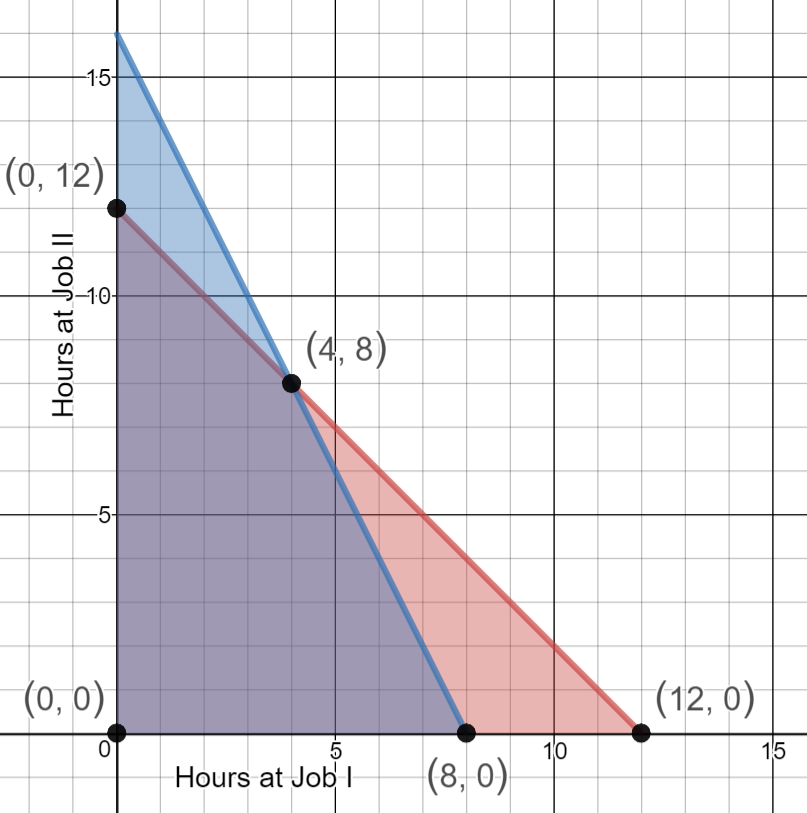=0, and y>=0. The bounded region is shaded below x+y<=12 from x=0 to x=4, by 2x+y<=16 from x=4 to x=8.">
- Plug corner points into the maximization equation \(P=40x+30y\).
- \((0,0): 40(0)+30(0)=0\)
- \((0,12): 40(0)+30(12)=360\)
- \((8,0): 40(8)+30(0)=320\)
- \((4,8): 40(4)+30(8)=400\)
- Nikki should work 4 hours per week at Job 1 and 8 hours per week at Job II to maximize her income.
- A factory manufactures two types of gadgets, regular and premium. Each gadget
requires the use of two operations, assembly and finishing, and there are at most 12 hours available for
each operation. A regular gadget requires 1 hour of assembly and 2 hours of finishing, while a premium
gadget needs 2 hours of assembly and 1 hour of finishing. Due to other restrictions, the company can
make at most 7 gadgets a day. If a profit of $20 is realized for each regular gadget and $30 for a
premium gadget, how many of each should be manufactured to maximize profit?
- x: # of regular gadgets manufactured
- y: # of premium gadgets manufactured
- Maximize: \(P=20x+30y\)
- \(x+2y\leq 12\)
- \(2x+y\leq 12\)
- \(x+y\leq 7\)
- \(x\geq 0\)
- \(y\geq 0\)
- 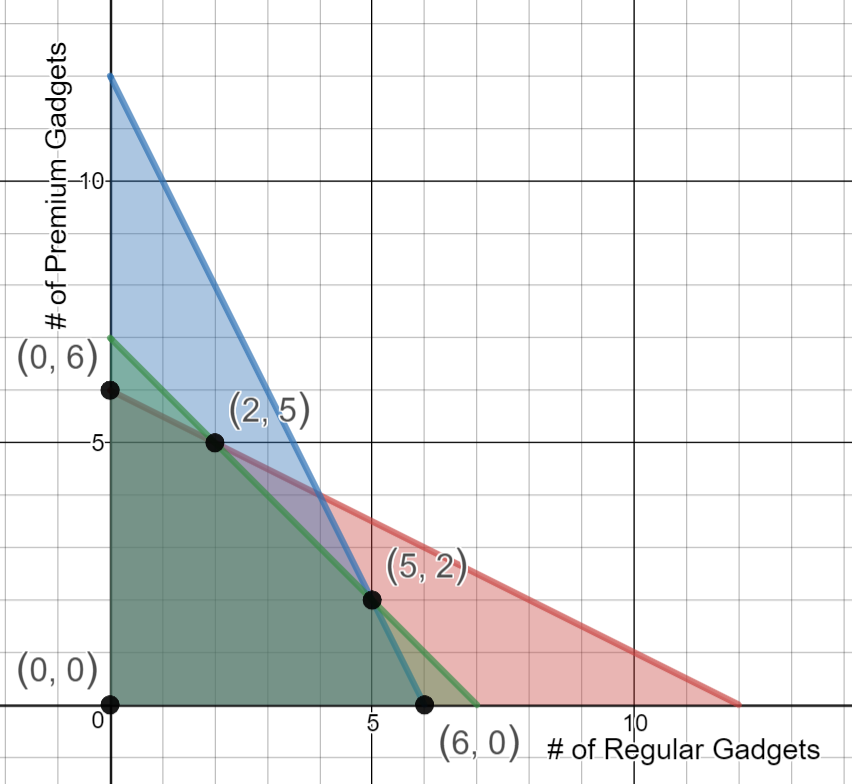=0, and y>=0. The bounded region is shaded below x+2y<=12 from x=0 to x=2, by x+y<=7 from x-2 to x=5, and by 2x+y<=12 from x=5 to x=6.">
- Plug corner points into the maximization equation \(P=20x+30y\).
- \((0,0): 20(0)+30(0)=0\)
- \((0,6): 20(0)+30(6)=180\)
- \((2,5): 20(2)+30(5)=190\)
- \((5,2): 20(5)+30(2)=160\)
- \((6,0): 20(6)+30(0)=120\)
- To maximize the profit, the company should make 2 regular and 5 premium gadgets.
- Professor Symons wishes to employ two students, John and Mary, to grade the
homework papers for his classes. John can mark 20 papers per hour and charges $5 per hour, and Mary can
mark 30 papers per hour and charges $8 per hour. Each student must be employed at least one hour a week
to justify their employment. If Mr. Symons has at least 110 homework papers to be marked each week, how
many hours per week should he employ each student to minimize his cost?
- x: # of hours John grades
- y: # of hours Mary grades
- Minimize: \(C=5x+8y\)
- \(20x+30y\geq 110\)
- \(x\geq 1\)
- \(y\geq 1\)
- 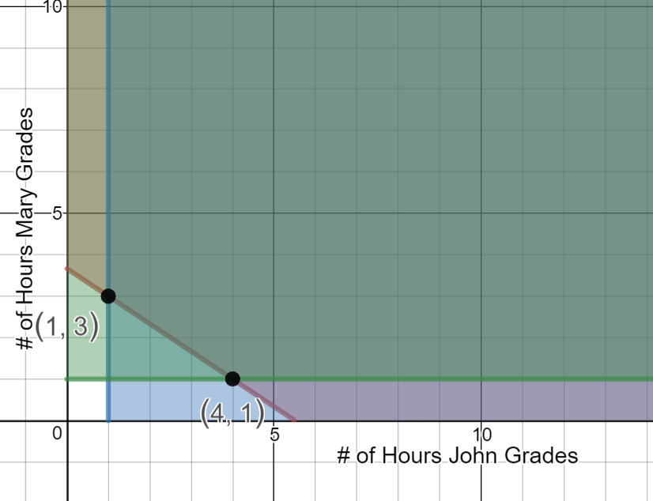=110, x>=1, and y>=1. The unbounded region has corner points at (1,3) and (4,1).">
- Plug corner points into the maximization equation \(C=5x+8y\).
- \((1,3): 5(1)+8(3)=29\)
- \((4,1): 5(4)+8(1)=28\)
- To minimize costs, Professor Symons should employ John 4 hours a week and Mary 1 hour per week.
- Professor Hamer is on a low cholesterol diet. During lunch at the college
cafeteria, he always chooses between two meals, Pasta or Tofu. The table below lists the amount of
protein, carbohydrates, and vitamins each meal provides along with the amount of cholesterol he is
trying to minimize. Mr. Hamer needs at least 200 grams of protein, 960 grams of carbohydrates, and 40
grams of vitamins for lunch each month. Over this time period, how many days should he have the Pasta
meal, and how many days the Tofu meal so that he gets the adequate amount of protein, carbohydrates, and
vitamins and at the same time minimizes his cholesterol intake?
Pasta Tofu Protein 8 g 16 g Carbohydrates 60 g 40 g Vitamin C 2 g 2 g Cholesterol 60 mg 50 mg - x: # of pasta lunches
- y: # of tofu lunches
- Minimize: \(C=60x+50y\)
- \(8x+16y\geq 200\)
- \(60x+40y\geq 960\)
- \(2x+2y\geq 40\)
- 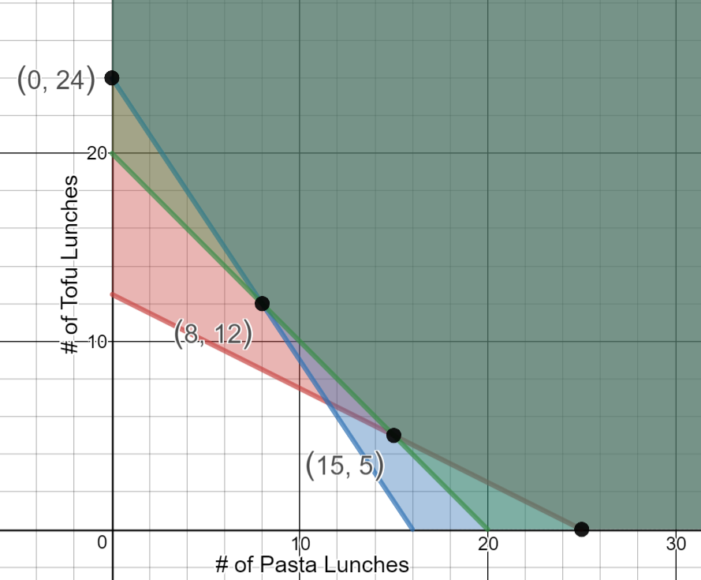=200, 60x+40y>=960, 2x+2y>=40. The corner points are (0,24), (8,12), (15,5) and (25,0).">
- Plug corner points into the maximization equation \(C=60x+50y\).
- \((0,24): 60(0)+50(24)=1200\)
- \((8,212): 60(8)+50(12)=1080\)
- \((15,5): 60(15)+50(5)=1150\)
- \((25,0): 60(25)+50(0)=1500\)
- To minimize his cholesterol intake, Professor Hamer should eat 8 pasta and 12 tofu lunches per month.
- A farmer has 100 acres of land on which she plans to grow wheat and corn. Each
acre of wheat requires 4 hours of labor and $20 of capital, and each acre of corn requires 16 hours of
labor and $40 of capital. The farmer has at most 800 hours of labor and $2400 of capital available. If
the profit from an acre of wheat is $80 and from an acre of corn is $100, how many acres of each crop
should she plant to maximize her profit?
- x: # of acres of wheat
- y: # of acres of corn
- Maximize: \(P=80x+100y\)
- \(x+y\leq 100\)
- \(4x+16y\leq 800\)
- \(20x+40y\leq 2400\)
- \(x\geq 0\)
- \(y\geq 0\)
- 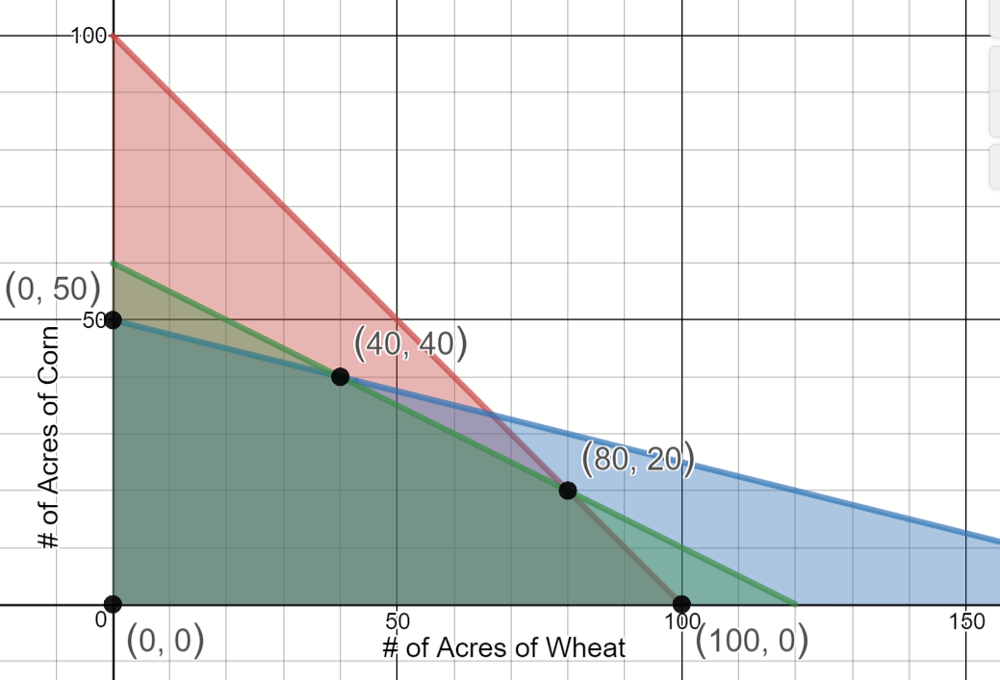=0, and y>=0. The corner points for the region are (0,0), (0,50), (40,40), (80,20), and (100,0).">
- Plug corner points into the maximization equation \(P=80x+100y\).
- \((0,0): 80(0)+100(0)=0\)
- \((0,50): 80(0)+100(50)=5000\)
- \((40,40): 80(40)+100(40)=7200\)
- \((80,20): 80(80)+100(20)=8400\)
- \((100,0): 80(100)+100(0)=8000\)
- In order to maximize her profit, the farmer should plant 80 acres of wheat and 20 acres of corn.
2.4. Simplex Method: Maximization
Maximize the following.
- Maximize: \(P=5x_1+20x_2\)
subject to: \(5x_1+x_2\leq 15\)
\(x_1+x_2\leq 7\)
\(x_1,x_2\geq 0\)
- Rewrite the equations using slack variables
- \(5x_1+x_2+s_1\;\;\;\;\;\;=15\)
- \(x_1+x_2\;\;\;\;\;+s_2\;\;\;\;\;=7\)
- \(-5x_1-20x_2\;\;\;\;\;\;+P=0\)
- \(x_1, x_2, s_1, s_2 \geq 0\)
- Create the Simplex Tableau
-
\(x_1\) \(x_2\) \(s_1\) \(s_2\) \(P\) 5 1 1 0 0 15 1 1 0 1 0 7 -5 -20 0 0 1 0 - The smallest negative number in the bottom row gives you the pivot column. In this problem the pivot column is column 2.
- To find the pivot row, divide the each of the last numbers in the tableau by the number in that same row of the pivot column. The smallest of these gives you the pivot row. The pivot element is the element in the intersection of the pivot row and the pivot column.
- \(15\div1=15\)
- \(7\div 1=7\)
- Since 7 is less than 15, row 2 is the pivot row.
- The pivot element is at the intersection of Row 2 and Column 2, so the pivot element is the 1 in row 2/column 2.
-
\(x_1\) \(x_2\) \(s_1\) \(s_2\) \(P\) 5 1 1 0 0 15 1 1 0 1 0 7 -5 -20 0 0 1 0 - Make the pivot element 1 (it already is in this problem).
- Make every other element in the pivot column 0 using row operations with the pivot element.
- \(-R_2+R_1\rightarrow R_1\)
- \(20R_2+R_3\rightarrow R_3\)
-
\(x_1\) \(x_2\) \(s_1\) \(s_2\) \(P\) 4 0 1 -1 0 8 1 1 0 1 0 7 15 0 0 20 1 140 - When there are no more negative numbers in the bottom row, you can read your solution from the Simplex Tableau.
- \(x_1=0,\; x_2=7,\; s_1=8,\; s_2=0,\) and \(Max\; P=140\)
- Maximize: \(P=40x_1+50x_2\)
subject to: \(x_1+3x_2\leq 18\)
\(5x_1+4x_2\leq 35\)
\(x_1,x_2\geq 0\)
- Rewrite the equations using slack variables
- \(x_1+3x_2+s_1\;\;\;\;\;\;=18\)
- \(5x_1+4x_2\;\;\;\;\;+s_2\;\;\;\;\;=35\)
- \(-40x_1-50x_2\;\;\;\;\;\;+P=0\)
- \(x_1, x_2, s_1, s_2 \geq 0\)
- Create the Simplex Tableau
-
\(x_1\) \(x_2\) \(s_1\) \(s_2\) \(P\) 1 3 1 0 0 18 5 4 0 1 0 35 -40 -50 0 0 1 0 - The smallest negative number in the bottom row gives you the pivot column. In this problem the pivot column is column 2.
- To find the pivot row, divide the each of the last numbers in the tableau by the number in that same row of the pivot column. The smallest of these gives you the pivot row. The pivot element is the element in the intersection of the pivot row and the pivot column.
- \(18\div3=6\)
- \(35\div 4=8.75\)
- Since 6 is less than 8.75, row 1 is the pivot row.
- The pivot element is at the intersection of Row 1 and Column 2, so the pivot element is the 3 in row 1/column 2.
-
\(x_1\) \(x_2\) \(s_1\) \(s_2\) \(P\) 1 3 1 0 0 18 5 4 0 1 0 35 -40 -50 0 0 1 0 - Make the pivot element 1.
- \(\frac13R_1\rightarrow R_1\)
-
\(x_1\) \(x_2\) \(s_1\) \(s_2\) \(P\) \(\frac13\) 1 \(\frac13\) 0 0 6 5 4 0 1 0 35 -40 -50 0 0 1 0 - Make every other element in the pivot column 0 using row operations with the pivot element.
- \(-4R_1+R_2\rightarrow R_2\)
- \(50R_1+R_3\rightarrow R_3\)
-
\(x_1\) \(x_2\) \(s_1\) \(s_2\) \(P\) \(\frac13\) 1 \(\frac13\) 0 0 6 \(\frac{11}{3}\) 0 \(-\frac43\) 1 0 11 \(-\frac{70}{3}\) 0 \(\frac{50}{3}\) 0 1 300 - Find your next pivot element. The smallest negative number on the bottom row is \(-\frac{70}{3}\), so column 1 is your pivot column.
- To find the pivot row, divide the each of the last numbers in the tableau by the number in that same row of the pivot column. The smallest of these gives you the pivot row. The pivot element is the element in the intersection of the pivot row and the pivot column.
- \(6\div \frac13=18\)
- \(11\div \frac{11}{3}=3\)
- Since 3 is less than 18, row 2 is the pivot row.
-
\(x_1\) \(x_2\) \(s_1\) \(s_2\) \(P\) \(\frac13\) 1 \(\frac13\) 0 0 6 \(\frac{11}{3}\) 0 \(-\frac43\) 1 0 11 \(-\frac{70}{3}\) 0 \(\frac{50}{3}\) 0 1 300 - \(\frac{3}{11}R_2\rightarrow R_2\)
-
\(x_1\) \(x_2\) \(s_1\) \(s_2\) \(P\) \(\frac13\) 1 \(\frac13\) 0 0 6 1 0 \(-\frac{4}{11}\) \(\frac{3}{11}\) 0 3 \(-\frac{70}{3}\) 0 \(\frac{50}{3}\) 0 1 300 - \(-\frac13R_2+R_1\rightarrow R_1\)
- \(-\frac{70}{3}R_2+R_3\rightarrow R_3\)
-
\(x_1\) \(x_2\) \(s_1\) \(s_2\) \(P\) 0 1 \(\frac{5}{11}\) \(-\frac{1}{11}\) 0 5 1 0 \(-\frac{4}{11}\) \(\frac{3}{11}\) 0 3 0 0 \(\frac{90}{11}\) \(\frac{70}{11}\) 1 370 - When there are no more negative numbers in the bottom row, you can read your solution from the Simplex Tableau.
- \(x_1=3,\; x_2=5,\; s_1=0,\; s_2=0,\) and \(Max\; P=370\)
- Maximize: \(P=50x_1+80x_2\)
subject to: \(x_1+2x_2\leq 32\)
\(3x_1+4x_2\leq 84\)
\(x_1,x_2\geq 0\)
- Rewrite the equations using slack variables
- \(x_1+2x_2+s_1\;\;\;\;\;\;=32\)
- \(3x_1+4x_2\;\;\;\;\;+s_2\;\;\;\;\;=84\)
- \(-50x_1-80x_2\;\;\;\;\;\;+P=0\)
- \(x_1, x_2, s_1, s_2 \geq 0\)
- Create the Simplex Tableau
-
\(x_1\) \(x_2\) \(s_1\) \(s_2\) \(P\) 1 2 1 0 0 32 3 4 0 1 0 84 -50 -80 0 0 1 0 - The smallest negative number in the bottom row gives you the pivot column. In this problem the pivot column is column 2.
- To find the pivot row, divide the each of the last numbers in the tableau by the number in that same row of the pivot column. The smallest of these gives you the pivot row. The pivot element is the element in the intersection of the pivot row and the pivot column.
- \(32\div2=16\)
- \(84\div 4=21\)
- Since 16 is less than 21, row 1 is the pivot row.
- The pivot element is at the intersection of Row 1 and Column 2, so the pivot element is the 2 in row 2/column 2.
-
\(x_1\) \(x_2\) \(s_1\) \(s_2\) \(P\) 1 2 1 0 0 32 3 4 0 1 0 84 -50 -80 0 0 1 0 - Make the pivot element 1.
- \(\frac12R_1\rightarrow R_1\)
-
\(x_1\) \(x_2\) \(s_1\) \(s_2\) \(P\) \(\frac12\) 1 \(\frac12\) 0 0 16 3 4 0 1 0 84 -50 -80 0 0 1 0 - Make every other element in the pivot column 0 using row operations with the pivot element.
- \(-2R_1+R_2\rightarrow R_2\)
- \(10R_1+R_3\rightarrow R_3\)
-
\(x_1\) \(x_2\) \(s_1\) \(s_2\) \(P\) \(\frac12\) 1 \(\frac12\) 0 0 16 1 0 -2 1 0 20 -10 0 40 0 1 1280 - Find your next pivot element. The smallest negative number on the bottom row is -10, so column 1 is your pivot column.
- To find the pivot row, divide the each of the last numbers in the tableau by the number in that same row of the pivot column. The smallest of these gives you the pivot row. The pivot element is the element in the intersection of the pivot row and the pivot column.
- \(16\div \frac12=32\)
- \(20\div1=20\)
- Since 20 is less than 32, row 2 is the pivot row.
- The pivot element is at the intersection of Row 2 and Column 1, so the pivot element is the 1 in row 2/column 1.
-
\(x_1\) \(x_2\) \(s_1\) \(s_2\) \(P\) \(\frac12\) 1 \(\frac12\) 0 0 16 1 0 -2 1 0 20 -10 0 40 0 1 1280 - Make every other element in the pivot column 0 using row operations with the pivot element.
- \(-\frac12R_2+R_1\rightarrow R_1\)
- \(10R_2+R_3\rightarrow R_3\)
-
\(x_1\) \(x_2\) \(s_1\) \(s_2\) \(P\) 0 1 \(\frac32\) \(-\frac12\) 0 6 1 0 -2 1 0 20 0 0 0 10 1 1480 - When there are no more negative numbers in the bottom row, you can read your solution from the Simplex Tableau.
- \(x_1=20,\; x_2=6,\; s_1=0,\; s_2=0,\) and \(Max\; P=1480\)
- Maximize: \(P=3x_1+2x_2\)
subject to: \(5x_1+2x_2\leq 20\)
\(3x_1+2x_2\leq 16\)
\(x_1,x_2\geq 0\)
- Rewrite the equations using slack variables
- \(5x_1+2x_2+s_1\;\;\;\;\;\;=20\)
- \(3x_1+2x_2\;\;\;\;\;+s_2\;\;\;\;\;=16\)
- \(-3x_1-2x_2\;\;\;\;\;\;+P=0\)
- \(x_1, x_2, s_1, s_2 \geq 0\)
- Create the Simplex Tableau
-
\(x_1\) \(x_2\) \(s_1\) \(s_2\) \(P\) 5 2 1 0 0 20 3 2 0 1 0 16 -3 -2 0 0 1 0 - The smallest negative number in the bottom row gives you the pivot column. In this problem the pivot column is column 1.
- To find the pivot row, divide the each of the last numbers in the tableau by the number in that same row of the pivot column. The smallest of these gives you the pivot row. The pivot element is the element in the intersection of the pivot row and the pivot column.
- \(20\div5=4\)
- \(16\div 3=5.3333\)
- Since 4 is less than 5.333, row 1 is the pivot row.
- The pivot element is at the intersection of Row 1 and Column 1, so the pivot element is the in row 1/column 1.
-
\(x_1\) \(x_2\) \(s_1\) \(s_2\) \(P\) 5 2 1 0 0 20 3 2 0 1 0 16 -3 -2 0 0 1 0 - Make the pivot element 1.
- \(\frac15R_1\rightarrow R_1\)
-
\(x_1\) \(x_2\) \(s_1\) \(s_2\) \(P\) 1 \(\frac25\) \(\frac15\) 0 0 4 3 2 0 1 0 16 -3 -2 0 0 1 0 - Make every other element in the pivot column 0 using row operations with the pivot element.
- \(-3R_1+R_2\rightarrow R_2\)
- \(3R_1+R_3\rightarrow R_3\)
-
\(x_1\) \(x_2\) \(s_1\) \(s_2\) \(P\) 1 \(\frac25\) \(\frac15\) 0 0 4 0 \(\frac45\) \(-\frac35\) 1 0 4 0 \(-\frac45\) \(\frac35\) 0 1 12 - Find your next pivot element. The smallest negative number on the bottom row is \(-\frac45\), so column 2 is your pivot column.
- To find the pivot row, divide the each of the last numbers in the tableau by the number in that same row of the pivot column. The smallest of these gives you the pivot row. The pivot element is the element in the intersection of the pivot row and the pivot column.
- \(4\div \frac25=10\)
- \(4\div\frac45=5\)
- Since 5 is less than 10, row 2 is the pivot row.
- The pivot element is at the intersection of Row 2 and Column 2, so the pivot element is the \(\frac45\) in row 2/column 2.
-
\(x_1\) \(x_2\) \(s_1\) \(s_2\) \(P\) 1 \(\frac25\) \(\frac15\) 0 0 4 0 \(\frac45\) \(-\frac35\) 1 0 4 0 \(-\frac45\) \(\frac35\) 0 1 12 - Make the pivot element 1.
- \(\frac45R_2\rightarrow R_2\)
-
\(x_1\) \(x_2\) \(s_1\) \(s_2\) \(P\) 1 \(\frac25\) \(\frac15\) 0 0 4 0 1 \(-\frac34\) \(\frac54\) 0 5 0 \(-\frac45\) \(\frac35\) 0 1 12 - Make every other element in the pivot column 0 using row operations with the pivot element.
- \(-\frac25R_2+R_1\rightarrow R_1\)
- \(\frac45R_2+R_3\rightarrow R_3\)
-
\(x_1\) \(x_2\) \(s_1\) \(s_2\) \(P\) 1 0 \(\frac12\) \(-\frac12\) 0 2 0 1 \(-\frac34\) \(\frac54\) 0 5 0 0 0 1 1 16 - When there are no more negative numbers in the bottom row, you can read your solution from the Simplex Tableau.
- \(x_1=2,\; x_2=5,\; s_1=0,\; s_2=0,\) and \(Max\; P=16\)
- The Cannon Hill furniture Company produces tables and chairs. Each table takes
four hours of labor from the carpentry department and two hours of labor from the finishing department.
Each chair requires three hours of carpentry and one hour of finishing. During the current week, 240
hours of carpentry time are available and 100 hours of finishing time. Each table produced gives a
profit of $70 and each chair a profit of $50. How many chairs and tables should be made?
- \(x_1\): number of tables produced
- \(x_2\): number of chairs produced
- Maximize: \(P=70x_1+50x_2\)
subject to: \(4x_1+3x_2\leq 240\)
\(2x_1+x_2\leq 100\)
\(x_1,x_2\geq 0\)
- Rewrite the equations using slack variables
- \(4x_1+3x_2+s_1\;\;\;\;\;\;=240\)
- \(2x_1+x_2\;\;\;\;\;+s_2\;\;\;\;\;=100\)
- \(-70x_1-50x_2\;\;\;\;\;\;+P=0\)
- \(x_1, x_2, s_1, s_2 \geq 0\)
- Create the Simplex Tableau
-
\(x_1\) \(x_2\) \(s_1\) \(s_2\) \(P\) 4 3 1 0 0 240 2 1 0 1 0 100 -70 -50 0 0 1 0 - The smallest negative number in the bottom row gives you the pivot column. In this problem the pivot column is column 1.
- To find the pivot row, divide the each of the last numbers in the tableau by the number in that same row of the pivot column. The smallest of these gives you the pivot row. The pivot element is the element in the intersection of the pivot row and the pivot column.
- \(240\div4=60\)
- \(100\div 2=50\)
- Since 50 is less than 60, row 2 is the pivot row.
- The pivot element is at the intersection of Row 2 and Column 1, so the pivot element is the 2 in row 2/column 1.
-
\(x_1\) \(x_2\) \(s_1\) \(s_2\) \(P\) 4 3 1 0 0 240 2 1 0 1 0 100 -70 -50 0 0 1 0 - Make the pivot element 1.
- \(\frac12R_2\rightarrow R_2\)
-
\(x_1\) \(x_2\) \(s_1\) \(s_2\) \(P\) 4 3 1 0 0 240 1 \(\frac12\) 0 \(\frac12\) 0 50 -70 -50 0 0 1 0 - Make every other element in the pivot column 0 using row operations with the pivot element.
- \(-4R_2+R_1\rightarrow R_1\)
- \(70R_2+R_3\rightarrow R_3\)
-
\(x_1\) \(x_2\) \(s_1\) \(s_2\) \(P\) 0 1 1 -2 0 40 1 \(\frac12\) 0 \(\frac12\) 0 50 0 -15 0 35 1 3500 - Find your next pivot element. The smallest negative number on the bottom row is -15, so column 2 is your pivot column.
- To find the pivot row, divide the each of the last numbers in the tableau by the number in that same row of the pivot column. The smallest of these gives you the pivot row. The pivot element is the element in the intersection of the pivot row and the pivot column.
- \(40\div1=40\)
- \(50\div\frac12=100\)
- Since 40 is less than 100, row 1 is the pivot row.
- The pivot element is at the intersection of Row 1 and Column 2, so the pivot element is the 1 in row 1/column 2.
-
\(x_1\) \(x_2\) \(s_1\) \(s_2\) \(P\) 0 1 1 -2 0 40 1 \(\frac12\) 0 \(\frac12\) 0 50 0 -15 0 35 1 3500 - The pivot element is 1.
- Make every other element in the pivot column 0 using row operations with the pivot element.
- \(-\frac12R_1+R_2\rightarrow R_2\)
- \(15R_1+R_3\rightarrow R_3\)
-
\(x_1\) \(x_2\) \(s_1\) \(s_2\) \(P\) 0 1 1 -2 0 40 1 0 \(-\frac12\) \(\frac32\) 0 30 0 0 15 5 1 4100 - When there are no more negative numbers in the bottom row, you can read your solution from the Simplex Tableau.
- \(x_1=30,\; x_2=40,\; s_1=0,\; s_2=0,\) and \(Max\; P=4100\)
The company should produce 30 tables and 40 chairs per week for a maximum profit of $4100.
2.5. Simplex Method: Minimization
Fundamental Principle of Duality: The minimization problem has a solution if and only if its dual maximum problem has a solution.
,Example 1:
Minimize: \(C=16x_1+45x_2\)
subject to: \(2x_1+5x_2 \geq50\)
\(x_1+3x_2 \geq 27\)
\(x_1, x_2 \geq 0\)
- Form the matrix A. (This is not a simplex tableau: solid line at the
bottom, no slack variables)
- \(A\)=
2 5 50 1 3 27 16 45 1
- \(A\)=
- Transpose the matrix \(A^T\). Row 1 becomes Column 1, Row 2 becomes Column 2,
etc.
- \(A^T\)=
2 1 16 5 3 45 50 27 1
- \(A^T\)=
- Create the Dual Maximization problem from this matrix. (Use \(y_1\) and \(y_2\)
instead of \(x's\))
- Maximize: \(P=50y_1+27y_2\)
subject to: \(2y_1+y_2 \leq16\)
\(5y_1+3y_2 \leq45\)
\(x_1, x_2, y_1, y_2 \geq 0\)
- Maximize: \(P=50y_1+27y_2\)
- Look at Desmos graphs of these two problems. (We will only do this for this one
problem).
-
Minimize: \(C=16x_1+45x_2\)
subject to: \(2x_1+5x_2 \geq50\)
\(x_1+3x_2 \geq 27\)
\(x_1, x_2 \geq 0\)
- 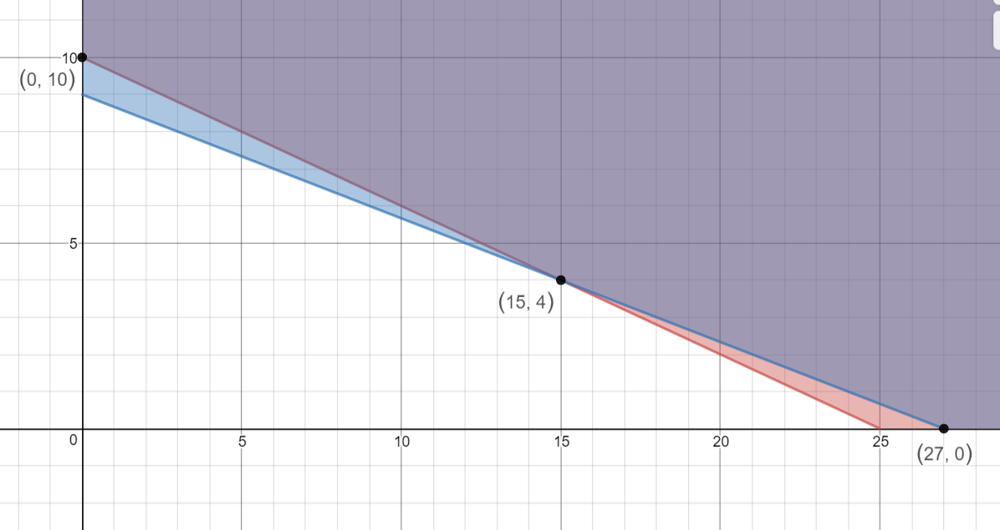=50 and x1+3x2>=27. Both have solid lines and are shaded above the lines (to the upper right). Corner points are (0,10), (15,4) and (27,0)">
- Corner Points: (0, 10), (15, 4), and (27, 0)
- \(C=16(0)+45(10)=450\)
- \(C=16(15)+45(4)=420\)
- \(C=16(27)+45(0)=432\)
- The minimum of 420 occurs at \((15, 4)\)
- Maximize: \(P=50y_1+27y_2\)
subject to: \(2y_1+y_2 \leq16\)
\(5y_1+3y_2 \leq45\)
\(y_1, y_2 \geq 0\)

- Corner Points: (0, 15), (3, 10), and (8, 0)
- \(P=50(0)+27(15)=405\)
- \(P=50(3)+27(10)=420\)
- \(P=50(8)+27(0)=400\)
- The maximum of 420 occurs at \((3,10)\)
- The Dual Maximization problem gives us a max of 420, which is the minimum value of the original problem.
-
- Now instead of graphing, use the Simplex Method to Solve the Dual Problem.
- Rewrite the equations using slack variables
- \(2y_1+y_2+x_1\;\;\;\;\;\;=16\)
- \(5y_1+3y_2\;\;\;\;\;+x_2\;\;\;\;\;=45\)
- \(-50y_1-27y_2\;\;\;\;\;\;+P=0\)
- \(x_1, x_2, y_1, y_2 \geq 0\)
-
\(y_1\) \(y_2\) \(x_1\) \(x_2\) \(P\) 2 1 1 0 0 16 5 3 0 1 0 45 -50 -27 0 0 1 0 - \(\frac12R_1 \rightarrow R_1\)
-
\(y_1\) \(y_2\) \(x_1\) \(x_2\) \(P\) 1 \(\frac12\) \(\frac12\) 0 0 8 5 3 0 1 0 45 -50 -27 0 0 1 0 - \(-5R_1+R_2 \rightarrow R_2\)
- \(50R_1+R_3 \rightarrow R_3\)
-
\(y_1\) \(y_2\) \(x_1\) \(x_2\) \(P\) 1 \(\frac12\) \(\frac12\) 0 0 8 0 \(\frac12\) \(-\frac52\) 1 0 5 0 -2 25 0 1 400 - Find new pivot element
-
\(y_1\) \(y_2\) \(x_1\) \(x_2\) \(P\) 1 \(\frac12\) \(\frac12\) 0 0 8 0 \(\frac12\) \(-\frac52\) 1 0 5 0 -2 25 0 1 400 - \(2R_2 \rightarrow R_2\)
-
\(y_1\) \(y_2\) \(x_1\) \(x_2\) \(P\) 1 \(\frac12\) \(\frac12\) 0 0 8 0 1 -5 2 0 10 0 -2 25 0 1 400 - \(-\frac12R_2+R_1 \rightarrow R_1\)
- \(2R_2+R_3 \rightarrow R_3\)
-
\(y_1\) \(y_2\) \(x_1\) \(x_2\) \(P\) 1 0 3 -1 0 3 0 1 -5 2 0 10 0 0 15 4 1 420
- The solution to the original minimization problem is the bottom row of the Simplex
Tableau (which is different than where we found the solutions in a maximization problem.
- Minimum of \(C=420\) at \(x_1=15\) and \(x_2=4\)
-
Minimize: \(C=12x_1+16x_2\)
subject to: \(x_1+2x_2 \geq40\)
\(x_1+x_2 \geq 30\)
\(x_1, x_2 \geq 0\)
- \(A\)=
1 2 40 1 1 30 12 16 1 - \(A^T\)=
1 1 12 2 1 16 40 30 1 - Maximize: \(P=40y_1+30y_2\)
subject to: \(y_1+y_2 \leq12\)
\(2y_1+y_2 \leq16\)
\(x_1, x_2, y_1, y_2 \geq 0\)
-
\(y_1\) \(y_2\) \(x_1\) \(x_2\) \(P\) 1 1 1 0 0 12 2 1 0 1 0 16 -40 -30 0 0 1 0 - \(\frac12R_2 \rightarrow R_2\)
-
\(y_1\) \(y_2\) \(x_1\) \(x_2\) \(P\) 1 1 1 0 0 12 1 \(\frac12\) 0 \(\frac12\) 0 8 -40 -30 0 0 1 0 - \(-R_2+R_1 \rightarrow R_1\)
- \(40R_2+R_3 \rightarrow R_3\)
-
\(y_1\) \(y_2\) \(x_1\) \(x_2\) \(P\) 0 \(\frac12\) 1 \(-\frac12\) 0 4 1 \(\frac12\) 0 \(\frac12\) 0 8 0 -00 0 20 1 320 - Find new pivot element.
-
\(y_1\) \(y_2\) \(x_1\) \(x_2\) \(P\) 0 \(\frac12\) 1 \(-\frac12\) 0 4 1 \(\frac12\) 0 \(\frac12\) 0 8 0 -10 0 20 1 320 - \(2R_1 \rightarrow R_1\)
-
\(y_1\) \(y_2\) \(x_1\) \(x_2\) \(P\) 0 1 2 -1 0 8 1 \(\frac12\) 0 \(\frac12\) 0 8 0 -10 0 20 1 320 - \(-\frac12R_1+R_2 \rightarrow R_2\)
- \(10R_1+R_3 \rightarrow R_3\)
-
\(y_1\) \(y_2\) \(x_1\) \(x_2\) \(P\) 0 1 2 -1 0 8 1 0 -1 1 0 4 0 0 20 10 1 400 - Minimum of \(C=400\) at \(x_1=20\) and \(x_2=10\)
- \(A\)=
- A company produces three products, A, B, and C, at its two factories, Factory I
and Factory II. Daily production of each factory for each product is listed below.
Factory 1 Factory 2 Product A 10 20 Product B 20 20 Product C 20 20 The company must product at least 1000 units of Product A, 1600 units of Product B, and 700 units of Product C. If the cost of operating Factory I is $4000 per day and the cost of operation Factory II is $5000, how many days should each factory operate to complete the order at a minimum cost, and what is the minimum cost?
- \(x_1\): # of days Factory 1 operates
- \(x_2\): # of days Factory 2 operates
-
Minimize: \(C=4000x_1+5000x_2\)
subject to: \(10x_1+20x_2 \geq1000\)
\(20x_1+20x_2 \geq 1600\)
\(20x_1+10x_2 \geq 700\)
\(x_1, x_2 \geq 0\)
- \(A\)=
10 20 1000 20 20 1600 20 10 700 4000 5000 1 - \(A^T\)=
10 20 20 4000 20 20 10 5000 1000 1600 700 1 - Maximize: \(P=1000y_1+1600y_2+700y_3\)
subject to: \(10y_1+20y_2+20y_3 \leq4000\)
\(20y_1+20y_2+10y_3 \leq5000\)
\(x_1, x_2, y_1, y_2 \geq 0\)
-
\(y_1\) \(y_2\) \(y_3\) \(x_1\) \(x_2\) \(P\) 10 20 20 1 0 0 4000 20 20 10 0 1 0 5000 -1000 -1600 -700 0 0 1 0 - \(-\frac{1}{20}R_1 \rightarrow R_1\)
-
\(y_1\) \(y_2\) \(y_3\) \(x_1\) \(x_2\) \(P\) \(\frac12\) 1 1 \(\frac{1}{20}\) 0 0 200 20 20 10 0 1 0 5000 -1000 -1600 -700 0 0 1 0 - \(-20R_1+R_2 \rightarrow R_2\)
- \(1600R_1+R_3 \rightarrow R_3\)
-
\(y_1\) \(y_2\) \(y_3\) \(x_1\) \(x_2\) \(P\) \(\frac12\) 1 1 \(\frac{1}{20}\) 0 0 200 10 0 -10 -1 1 0 1000 -200 0 900 80 0 1 320,000 - Find new pivot element.
-
\(y_1\) \(y_2\) \(y_3\) \(x_1\) \(x_2\) \(P\) \(\frac12\) 1 1 \(\frac{1}{20}\) 0 0 200 10 0 -10 -1 1 0 1000 -200 0 900 80 0 1 320,000 - \(-\frac{1}{10}R_2 \rightarrow R_2\)
-
\(y_1\) \(y_2\) \(y_3\) \(x_1\) \(x_2\) \(P\) \(\frac12\) 1 1 \(\frac{1}{20}\) 0 0 200 1 0 -1 \(-\frac{1}{10}\) \(\frac{1}{10}\) 0 100 -200 0 900 80 0 1 320,000 - \(-\frac12R_2+R_1 \rightarrow R_1\)
- \(200R_2+R_3 \rightarrow R_3\)
-
\(y_1\) \(y_2\) \(y_3\) \(x_1\) \(x_2\) \(P\) 0 1 \(\frac32\) \(\frac{1}{10}\) \(-\frac{1}{20}\) 0 150 1 0 -1 \(-\frac{1}{10}\) \(\frac{1}{10}\) 0 100 0 0 700 60 20 1 340,000 - Minimize cost at $340,000 when Factory 1 operates for 60 days and Factory 2 operates fo 20 days.
-
Minimize: \(C=4x_1+3x_2\)
subject to: \(x_1+x_2 \geq10\)
\(3x_1+2x_2 \geq 24\)
\(x_1, x_2 \geq 0\)
- \(A\)=
1 1 10 3 2 24 4 3 1 - \(A^T\)=
1 3 4 1 2 3 10 24 1 - Maximize: \(P=10y_1+24y_2\)
subject to: \(y_1+3y_2 \leq4\)
\(y_1+2y_2 \leq3\)
\(x_1, x_2, y_1, y_2 \geq 0\)
-
\(y_1\) \(y_2\) \(x_1\) \(x_2\) \(P\) 1 3 1 0 0 4 1 2 0 1 0 3 -10 -24 0 0 1 0 - \(\frac13R_1 \rightarrow R_1\)
-
\(y_1\) \(y_2\) \(x_1\) \(x_2\) \(P\) \(\frac13\) 1 \(\frac13\) 0 0 \(\frac43\) 1 2 0 1 0 3 -10 -24 0 0 1 0 - \(-2R_1+R_2 \rightarrow R_2\)
- \(24R_1+R_3 \rightarrow R_3\)
-
\(y_1\) \(y_2\) \(x_1\) \(x_2\) \(P\) \(\frac13\) 1 \(\frac13\) 0 0 \(\frac43\) \(\frac13\) 0 \(-\frac23\) 1 0 \(\frac13\) -2 0 8 0 1 32 - Find the new pivot element.
-
\(y_1\) \(y_2\) \(x_1\) \(x_2\) \(P\) \(\frac13\) 1 \(\frac13\) 0 0 \(\frac43\) \(\frac13\) 0 \(-\frac23\) 1 0 \(\frac13\) -2 0 8 0 1 32 - \(3R_2 \rightarrow R_2\)
-
\(y_1\) \(y_2\) \(x_1\) \(x_2\) \(P\) \(\frac13\) 1 \(\frac13\) 0 0 \(\frac43\) 1 0 -2 3 0 1 -2 0 8 0 1 32 - \(-\frac13R_2+R_1 \rightarrow R_1\)
- \(2R_2+R_3 \rightarrow R_3\)
-
\(y_1\) \(y_2\) \(x_1\) \(x_2\) \(P\) 0 1 1 -1 0 1 1 0 -2 3 0 1 0 0 4 6 1 34 - Minimum of \(C=34\) at \(x_1=4\) and \(x_2=6\)
- \(A\)=
- For his classes, Professor Wright gives three types of quizzes, objective, recall,
and recall-plus. To keep his students on their toes, he has decided to give at least 20 quizzes next
quarter. The three types, objective, recall, and recall-plus quizzes, require the students to spend,
respectively, 10 minutes, 30 minutes, and 60 minutes for preparation, and Professor Wright would like
them to spend at least 12 hours(720 minutes) preparing for these quizzes above and beyond the normal
study time. An average score on an objective quiz is 5, on a recall type 6, and on a recall-plus 7, and
Dr. Wright would like the students to score at least 130 points on all quizzes. It takes the professor
one minute to grade an objective quiz, 2 minutes to grade a recall type quiz, and 3 minutes to grade a
recall-plus quiz. How many of each type should he give in order to minimize his grading time?
- \(x_1\): # of objective quizzes
- \(x_2\): # of recall quizzes
- \(x_3\): # of recall-plus quizzes
-
Minimize: \(Z=x_1+2x_2+3x_3\)
subject to: \(x_1+x_2+x_3 \geq20\)
\(10x_1+30x_2+60x_3 \geq 720\)
\(5x_1+6x_2+7x_3 \geq 130\)
\(x_1, x_2, x_3 \geq 0\)
- \(A\)=
1 1 1 20 10 30 60 720 5 6 7 130 1 2 3 1 - \(A^T\)=
1 10 5 1 1 30 6 2 1 60 7 3 20 720 130 1 -
\(y_1\) \(y_2\) \(y_3\) \(x_1\) \(x_2\) \(x_3\) \(P\) 1 10 5 1 0 0 0 1 1 30 6 0 1 0 0 2 1 60 7 0 0 1 0 3 -20 -720 -130 0 0 0 1 0 - \(\frac{1}{60}R_3 \rightarrow R_3\)
-
\(y_1\) \(y_2\) \(y_3\) \(x_1\) \(x_2\) \(x_3\) \(P\) 1 10 5 1 0 0 0 1 1 30 6 0 1 0 0 2 \(\frac{1}{60}\) 1 \(\frac{7}{60}\) 0 0 \(\frac{1}{60}\) 0 \(\frac{1}{20}\) -20 -720 -130 0 0 0 1 0 - \(-10R_3+R_1 \rightarrow R_1\)
- \(-30R_3+R_2 \rightarrow R_2\)
- \(720R_3+R_4 \rightarrow R_4\)
-
\(y_1\) \(y_2\) \(y_3\) \(x_1\) \(x_2\) \(x_3\) \(P\) \(\frac{5}{6}\) 0 \(\frac{23}{6}\) 1 0 \(-\frac{1}{6}\) 0 \(\frac12\) \(\frac12\) 0 \(\frac52\) 0 1 \(-\frac12\) 0 \(\frac12\) \(\frac{1}{60}\) 1 \(\frac{7}{60}\) 0 0 \(\frac{1}{60}\) 0 \(\frac{1}{20}\) -8 0 -46 0 0 12 1 36 - Find new pivot element.
-
\(y_1\) \(y_2\) \(y_3\) \(x_1\) \(x_2\) \(x_3\) \(P\) \(\frac{5}{6}\) 0 \(\frac{23}{6}\) 1 0 \(-\frac{1}{6}\) 0 \(\frac12\) \(\frac12\) 0 \(\frac52\) 0 1 \(-\frac12\) 0 \(\frac12\) \(\frac{1}{60}\) 1 \(\frac{7}{60}\) 0 0 \(\frac{1}{60}\) 0 \(\frac{1}{20}\) -8 0 -46 0 0 12 1 36 - \(\frac{6}{23}R_1 \rightarrow R_1\)
-
\(y_1\) \(y_2\) \(y_3\) \(x_1\) \(x_2\) \(x_3\) \(P\) \(\frac{5}{23}\) 0 1 \(\frac{6}{23}\) 0 \(-\frac{1}{23}\) 0 \(\frac{3}{23}\) \(\frac12\) 0 \(\frac52\) 0 1 \(-\frac12\) 0 \(\frac12\) \(\frac{1}{60}\) 1 \(\frac{7}{60}\) 0 0 \(\frac{1}{60}\) 0 \(\frac{1}{20}\) -8 0 -46 0 0 12 1 36 - \(-\frac52R_1+R_2 \rightarrow R_2\)
- \(-\frac{7}{60}R_1+R_3 \rightarrow R_3\)
- \(46R_1+R_4 \rightarrow R_4\)
-
\(y_1\) \(y_2\) \(y_3\) \(x_1\) \(x_2\) \(x_3\) \(P\) \(\frac{5}{23}\) 0 1 \(\frac{6}{23}\) 0 \(-\frac{1}{23}\) 0 \(\frac{3}{23}\) \(-\frac{1}{23}\) 0 0 \(-\frac{15}{23}\) 0 \(-\frac{9}{23}\) 0 \(\frac{4}{23}\) \(-\frac{1}{115}\) 1 0 \(-\frac{7}{230}\) 0 \(\frac{1}{46}\) 0 \(\frac{4}{115}\) 2 0 0 12 0 10 1 42 - In order to minimize his grading time to 42 minutes, Professor Wright should give 12 objective quizzes, 0 recall quizzes, and 10 recall-plus quizzes.
3. Finance Unit
Simple Interest
\(I=Prt\)
\(A=P(1+rt)\)
Compound Interest
\(A=P(1+\frac{r}{n})^{nt}\)
Continuous Compounding
\(A=Pe^{rt}\)
Future Value of an Ordinary Annuity
\(FV=PMT\frac{\left[\left(1+{\displaystyle\frac rn}\right)^{nt}-1\right]}{\displaystyle\frac rn}\)
Present Value of an Annuity
\(PV=PMT\frac{\left[1-\left(1+{\displaystyle\frac rn}\right)^{-nt}\right]}{\displaystyle\frac rn}\)
A: amount (future value)
P: principal (present value)
PV: preset value of all payments
FV: future value of all payments
PMT: periodic payments
r: annual interest rate
t: time in years
n: numbering of compounding periods per year
3.1. Simple Interest
Use the simple interest formulas to answer the following questions. Write all of your answers in complete sentences.
- Ursula borrows $600 for 5 months at a simple interest rate of 15% per year. Find
the interest, and the total amount she is obligated to pay?
- \(I=Prt\)
- \(I=600(0.15)(5/12)\)
- \(I=37.50\)
- Ursula's interest will be $37.50, and the total amount she must pay is $637.50
- Jose deposited $2500 in an account that pays 6% simple interest. How much money
will he have at the end of 3 years?
- \(A=P(1+rt)\)
- \(A=2500(1+.06*3)\)
- \(A=2950\)
- At the end of three years, Jose will have $2950.
- Darnel owes a total of $3060 which includes 12% interest for the three years he
borrowed the money. How much did he originally borrow?
- \(A=P(1+rt)\)
- \(3060=P(1+.12*3)\)
- \(3060=P(1.36)\)
- \(3060/1.36=P\)
- Darnel borrowed $2250.
- A Visa credit card company charges a 1.5% finance charge each month on the unpaid
balance. If Martha owes $2350 and has not paid her bill for three months, how much does she owe?
- \(A=P(1+rt)\)
- \(A=2350(1+.015*3)\)
- \(A=2455.75\)
- Martha owes $2455.75.
- If an amount of $2,000 is borrowed at a simple interest rate of 10% for 3 years,
how much is the interest?
- \(I=Prt\)
- \(I=2000(0.10)(3)\)
- \(I=600\)
- The interest is $600.
- You borrow $4,500 for six months at a simple interest rate of 8%. How much is the
interest?
- \(I=Prt\)
- \(I=4500(0.08)(1/2)\)
- \(I=180\)
- The interest is $180.
- John borrows $2400 for 3 years at 9% simple interest. How much will he owe at the
end of 3 years?
- \(A=P(1+rt)\)
- \(A=2400(1+.09*3)\)
- \(A=3048\)
- John will owe $3048.
- Jessica takes a loan of $800 for 4 months at 12% simple interest. How much does
she owe at the end of the 4-month period?
- \(A=P(1+rt)\)
- \(A=800(1+0.12*1/3)\)
- \(A=832\)
- Jessica owes $832.
- If an amount of $2,160, which includes a 10% simple interest for 2 years, is paid
back, how much was borrowed 2 years earlier?
- \(A=P(1+rt)\)
- \(2160=P(1+0.10*2)\)
- \(2160=P(1.20)\)
- \(1800=P\)
- Two years earlier, $800 was borrowed.
- Jamie just paid off a loan of $2,544, the principal and simple interest. If he
took out the loan six months ago at 12% simple interest, what was the amount borrowed?
- \(A=P(1+rt)\)
- \(2544=P(1+0.12*1/2)\)
- \(2544=P(1.06)\)
- \(P=2400\)
- Jamie borrowed $2400.
- Shanti charged $800 on her charge card and did not make a payment for six months.
If there is a monthly charge of 1.5%, how much does she owe?
- \(A=P(1+rt)\)
- \(A=800(1+0.015*6)\)
- \(A=872\)
- Shanti owes $872.
- A credit card company charges 18% interest on the unpaid balance. If you owed
$2000 three months ago and have been delinquent since, how much do you owe?
- \(A=P(1+rt)\)
- \(A=2000(1+0.18*1/4)\)
- \(A=2090\)
- You owe $2090.
- An amount of $2000 is borrowed for 3 years. At the end of the three years, $2660
is paid back. What was the simple interest rate?
- \(A=P(1+rt)\)
- \(2660=2000(1+3r)\)
- \(2660=2000+60000r\)
- \(660=6000r\)
- \(0.11=r\)
- The simple interest rate is 11%.
- Nancy borrowed $1,800 and paid back $1,920, four months later. What was the simple
interest rate?
- \(A=P(1+rt)\)
- \(1920=1800(1+(1/3)r)\)
- \(1920=1800+600r\)
- \(120=600r\)
- \(0.2=r\)
- The simple interest rate is 20%.
3.2. Compound and Continuous Interest
Compound Interest
Simple interest is charged when the lending period is short and often less than a year. When the money is loaned or borrowed for a longer time period, the interest is paid (or charged) not only on the principal, but also on the past interest, and we say the interest is compounded.
Suppose $200 is deposited in an account that pays 8% interest. At the end of one year, the account will have
\($200+$200(0.08)=$200(1+0.08/1)^{1*1}=$216\)
Now suppose this amount, $216, remains in the account. After the second year, it will have
\($200(1+0.08)(1+0.08)=$200(1+0.08/1)^{1*2}=$233.28\)
After three years, it will have
\($200(1+0.08)(1+0.08)(1+0.08)=$200(1+0.08/1)^{1*3}=$251.94\)
at the end of 5 years, it will have
\(200(1+0.08/1)^{1*5}=$293.87\)
Compound Interest Formula:
\(A=P(1+\frac rn)^{nt}\)

Compounding Frequency
Yearly:
\(1000(1+\frac {0.08}1)^{1*1}=1080\)
Quarterly:
\(1000(1+\frac {0.08}4)^{4*1}=1082.43\)
Monthly:
\(1000(1+\frac {0.08}{12})^{12*1}=1083\)
Daily:
\(1000(1+\frac {0.08}{365})^{365*1}=1083.28\)
Continuously (at every instant):
\(1000\left[\lim_{n\rightarrow\infty}\;\left(1+\frac{0.08}n\right)^n\right]=1083.29\)
And since \(e=\lim_{n\rightarrow\infty}\;\left(1+\frac1n\right)^n\approx2.718281829\)
The continuous compounding formula is: \(A=Pe^{rt}\)
Use a compound or continuous interest formula to answer the following questions. Write all of your answers in complete sentences
- If $3500 is invested at 9% compounded monthly, how much will be in the account in
four years?
- \(A=P(1+\frac{r}{n})^{nt}\)
- \(A=3000(1+\frac{.09}{12})^{12*4}\)
- \(A=5009.92\)
- In four years, there will be $5009.92 in the account.
- How much should be invested in an account paying 9% compounded daily for it to
accumulate to $5,000 in five years?
- \(A=P(1+\frac{r}{n})^{nt}\)
- \(5000=P(1+\frac{.09}{365})^{365*5}\)
- \(P=3188.32\)
- To accumulate $5000 in five years, $3188.32 should be invested.
- If $3500 is invested at 9% compounded continuously, what will the future value be
in four years?
- \(A=Pe^{rt}\)
- \(A=3500e^{.09*4}\)
- \(A=5016.65\)
- In four years, the account will be worth $5016.65.
- If an amount is invested at 7% compounded monthly, estimate how long will it take
to double if compounded monthly? (The Law of 70 (used to estimate how long it will take to double): The
number of years to double money = 70 ÷ interest rate)
- \(A=P(1+\frac{r}{n})^{nt}\)
- \(2=1(1+\frac{.07}{12})^{12t}\)
- \(2=(\frac{1207}{1200})^{12t}\)
- \(ln2=ln(\frac{1207}{1200})^{12t}\)
- \(ln2=12t*ln(\frac{1207}{1200})\)
- \(\frac{ln2}{12ln(\frac{1207}{1200})}=t\)
- \(9.93=t\)
- It will take approximately 9.93 years for the amount to double.
- If, at the end of two years, a savings account has a balance of $1172.60, and the
interest rate is compounded monthly at 3.2%, then what is the original amount deposited two years
ago?
- \(A=P(1+\frac{r}{n})^{nt}\)
- \(1172.60=P(1+\frac{.032}{12})^{12*2}\)
- \(1172.60=P(1.066001591....)\)
- \(P=1100\)
- The original amount deposited two years ago was $1100.
- An initial deposit of $5,000.00 is made into a savings account that compounds 7.1%
interest annually. How much is in the account at the end of five years?
- \(A=P(1+\frac{r}{n})^{nt}\)
- \(A=5000(1+\frac{.071}{1})^{1*5}\)
- \(A=7045.59\)
- At the end of 5 years, there is $7045.59 in the account.
- After 80 years of 5.8% interest compounded monthly, an account has $102,393.44.
What was the original deposit amount?
- \(A=P(1+\frac{r}{n})^{nt}\)
- \(102,393.44=P(1+\frac{.058}{12})^{12*80}\)
- \(102,393.44=P(102.393....)\)
- \(P=1000\)
- The original amount deposited into the account 80 years ago was $1000.
- Bank A is offering a 2.7%, compounded annually, savings account guaranteed for
three years. Bank B is offering a 1.9%, compounded monthly, savings account guaranteed for two years.
Which bank would yield the most on a principal of $500.00? What is the dollar amount difference between
the two bank accounts?
- \(A=P(1+\frac{r}{n})^{nt}\)
- \(A=500(1+\frac{.027}{1})^{1*3}\)
- \(A=541.60\)
- \(A=P(1+\frac{r}{n})^{nt})\)
- \(A=500(1+\frac{.019}{12})^{12*2}\)
- \(A=519.35\)
- The difference between the accounts is $22.25.
- How much would need to be deposited into an account earning 4.7%, compounded
quarterly, so that the balance will be $1,000,000.00 in 20 years?
- \(A=P(1+\frac{r}{n})^{nt}\)
- \(1,000,000=P(1+\frac{.047}{4})^{4*20})\)
- \(1,000,000=P(2.545....)\)
- \(P=392,774.20\)
- To have $1,000,000 in 20 years, $392,774.20 should be deposited.
- Mary discovers a bank account her parents left for her that was opened when she
was born 50 years ago. The statement she found states the deposit amount of $100.00 into an account
earning 1.8% compounded quarterly. What is the balance of her account now?
- \(A=P(1+\frac{r}{n})^{nt}\)
- \(A=100(1+\frac{.018}{4})^{4*50}\)
- \(A=245.46\)
- The balance in the account is $245.46.
- In the same box, Mary discovers another statement for an account her grandparents
opened for her when she was born 50 years ago. This statement shows a deposit amount of $100.00 into a
3.6%, compounded quarterly, account. How much is in this account now?
- \(A=P(1+\frac{r}{n})^{nt}\)
- \(A=100(1+\frac{.036}{4})^{4*50}\)
- \(A=600.11\)
- The balance in the account is $600.11.
- Luckily, Mary finds a third statement for an account her Aunt opened for her. This
was also $100.00 at 1.8%, but it is compounded monthly. How much is in this account now? Based on the
answers for each of the accounts Mary discovered, is it better to compound more often or earn a higher
interest rate?
- \(A=P(1+\frac{r}{n})^{nt}\)
- \(A=100(1+\frac{.018}{12})^{12*50}\)
- \(A=245.79\)
- It is better to earn a higher interest rate.
- An account earning 6.6% interest compounded continuously for 10 years would have a
balance of how much if the principal was $550.00?
- \(A=Pe^{rt}\)
- \(A=550e^{.066*10}\)
- \(A=1064.14\)
- The balance after 10 years would be $1064.14.
- What was the principal for a continuously compounded account earning 3.9% for 15
years that now has a balance of $2,500,000.00?
- \(A=Pe^{rt}\)
- \(2,500,000=Pe^{.039*15}\)
- \(\frac{2500000}{e^{.039*15}}=P\)
- \(P=1,392,764,66\)
- The principal invested 15 years ago was $1,392,764.66.
- A teenager saved small dollar amounts throughout the school year and now has
$712.00. He can choose from two bank offers. The first is 5.3% compounded continuously for six years.
The second is compounded quarterly for five years at 6.0%. Which account will yield the most money? What
is the dollar amount difference between the accounts at the end of their terms?
- \(A=Pe^{rt}\)
- \(A=712e^{.053*6t}\)
- \(A=978.56\)
- \(A=P(1+\frac{r}{n})^{nt}\)
- \(A=712(1+\frac{.06}{4})^{4*5}\)
- \(A=958.96\)
- The difference in the accounts at the end of their terms is $19.60.
3.3. Future Value of an Annuity
Definitions:
Annuity: sequence of equal periodic payments
Ordinary Annuity: payments made at the end of the period
Annuity Due: payments made at the beginning of the period
Sinking Fund: an annuity established for accumulating funds to meet future obligations
Future Value Annuity Formula:
\(FV=PMT\frac{\left[\left(1+{\displaystyle\frac rn}\right)^{nt}-1\right]}{\left({\displaystyle\frac rn}\right)}\)
Use an Annuity formula to answer the following questions. Write all of your answers in complete sentences.
- If at the end of each month a deposit of $500 is made in an account that pays 8%
compounded monthly, what will the final amount be after five years?
- \(FV=PMT\frac{\left[\left(1+{\displaystyle\frac rn}\right)^{nt}-1\right]}{\left({\displaystyle\frac rn}\right)}\)
- \(FV=500\frac{\left[\left(1+{\displaystyle\frac{.08}{12}}\right)^{12\ast5}-1\right]}{\displaystyle\frac{.08}{12}}\)
- After five years, there will be $36,738.43.
- Tanya deposits $300 at the end of each quarter in her savings account. If the
account earns 5.75%, how much money will she have in 4 years?
- \(FV=PMT\frac{\left[\left(1+{\displaystyle\frac rn}\right)^{nt}-1\right]}{\left({\displaystyle\frac rn}\right)}\)
- \(FV=300\frac{\left[\left(1+{\displaystyle\frac{.0575}{4}}\right)^{4\ast4}-1\right]}{\displaystyle\frac{.0575}{4}}\)
- Tanya will have $5353.89 in four years.
- Robert needs $5000 in three years. How much should he deposit each month in an
account that pays 8% in order to achieve his goal?
- \(FV=PMT\frac{\left[\left(1+{\displaystyle\frac rn}\right)^{nt}-1\right]}{\left({\displaystyle\frac rn}\right)}\)
- \(5000=PMT\frac{[( 1+\frac{.08}{12})^{12*3}-1]}{\frac{.08}{12}}\)
- Robert needs to deposit $123.35 each month.
- A business needs $450,000 in five years. How much should be deposited each quarter
in a sinking fund that earns 9% to have this amount in five years?
- \(FV=PMT\frac{\left[\left(1+{\displaystyle\frac rn}\right)^{nt}-1\right]}{\left({\displaystyle\frac rn}\right)}\)
- \(450,000=PMT\frac{[( 1+\frac{.09}{4})^{4*5}-1]}{\frac{.09}{4}}\)
- The business should deposit $18,063.93 each quarter.
- Find the future value of an annuity of $200 per month for 5 years at 6% compounded
monthly.
- \(FV=PMT\frac{\left[\left(1+{\displaystyle\frac rn}\right)^{nt}-1\right]}{\left({\displaystyle\frac rn}\right)}\)
- \(FV=200\frac{[( 1+\frac{.06}{12})^{12*5}-1]}{\frac{.06}{12}}\)
- The future value is $13,954.01.
- How much money should be deposited at the end of each month in an account paying
7.5% for it to amount to $10,000 in 5 years?
- \(FV=PMT\frac{\left[\left(1+{\displaystyle\frac rn}\right)^{nt}-1\right]}{\left({\displaystyle\frac rn}\right)}\)
- \(10,000=PMT\frac{[( 1+\frac{.075}{12})^{12*5}-1]}{\frac{.075}{12}}\)
- To accumulate $10,000 in five years, $137.88 should be deposited each month.
- At the end of each month Rita deposits $300 in an account that pays 5%. What will
the final amount be in 4 years?
- \(FV=PMT\frac{\left[\left(1+{\displaystyle\frac rn}\right)^{nt}-1\right]}{\left({\displaystyle\frac rn}\right)}\)
- \(FV=300\frac{[( 1+\frac{.05}{12})^{12*4}-1]}{\frac{.05}{12}}\)
- In four years, Rita will have $15,904.47 in her account.
- Mr. Chang wants to retire in 10 years and can save $650 every three months. If the
interest rate is 7.8%, how much will he have at the end of 5 years?
- \(FV=PMT\frac{\left[\left(1+{\displaystyle\frac rn}\right)^{nt}-1\right]}{\left({\displaystyle\frac rn}\right)}\)
- \(FV=650\frac{[( 1+\frac{.078}{4})^{4*5}-1]}{\frac{.078}{4}}\)
- At the end of five years, Mr. Chang will have $15,714.90
- A firm needs to replace most of its machinery in five years at a cost of $500,000.
The company wishes to create a sinking fund to have this money available in five years. How much should
the quarterly deposits be if the fund earns 8%?
- \(FV=PMT\frac{\left[\left(1+{\displaystyle\frac rn}\right)^{nt}-1\right]}{\left({\displaystyle\frac rn}\right)}\)
- \(500,000=PMT\frac{[( 1+\frac{.08}{4})^{4*5}-1]}{\frac{.08}{4}}\)
- The quarterly deposits should be $20,578.36.
- Ms. Brown needs $5,000 in three years. If the interest rate is 9%, how much should
she save at the end of each month to have that amount in three years?
- \(FV=PMT\frac{\left[\left(1+{\displaystyle\frac rn}\right)^{nt}-1\right]}{\left({\displaystyle\frac rn}\right)}\)
- \(5,000=PMT\frac{[( 1+\frac{.09}{12})^{12*3}-1]}{\frac{.09}{12}}\)
- Ms. Brown needs to save $121.50 each month.
- A company has a $120,000 note due in 4 years. How much should be deposited at the
end of each quarter in a sinking fund to pay off the note in four years if the interest rate is
8%?
- \(FV=PMT\frac{\left[\left(1+{\displaystyle\frac rn}\right)^{nt}-1\right]}{\left({\displaystyle\frac rn}\right)}\)
- \(120,000=PMT\frac{[( 1+\frac{.08}{4})^{4*4}-1]}{\frac{.08}{4}}\)
- To payoff the note in four years, $6438.02 should be deposited each month.
- You are now 20 years of age and decide to save $100 at the end of each month until
you are 23, when you graduate from college and start your career. You do not save anything for 2 years
while you pay down your student loans. You begin saving again when you are 25, and you save $400 at the
end of each month until you retire at 67. If the interest rate is 7.2%, how much money will you have
when you are 67?
- \(FV=PMT\frac{\left[\left(1+{\displaystyle\frac rn}\right)^{nt}-1\right]}{\left({\displaystyle\frac rn}\right)}\)
- \(FV=100\frac{[( 1+\frac{.072}{12})^{12*3}-1]}{\frac{.072}{12}}=4005.03\)
- \(A=P(1+\frac{r}{n})^{nt}\)
- \(A=4005.03(1+\frac{.072}{12})^{12*44}=94,262.64\)
- \(FV=PMT\frac{\left[\left(1+{\displaystyle\frac rn}\right)^{nt}-1\right]}{\left({\displaystyle\frac rn}\right)}\)
- \(FV=400\frac{[( 1+\frac{.072}{12})^{12*3}-1]}{\frac{.072}{12}}=1,292,557.30\)
- You will have $1,386,819.94 when you retire.
3.4. Present Value of an Annuity
Present Value of an Annuity Formula:
\(PV=PMT\;\left[\frac{1-\left(1+\frac rn\right)^{-nt}}{\displaystyle\frac rn}\right]\)Use an Annuity formula to answer the following questions. Write all answers in complete sentences.
- Suppose you have won a lottery that pays $1,000 per month for the next 20 years,
but you prefer to have the entire amount now. If the interest rate is 8%, how much will you
accept?
- \(PV=PMT\;\left[\frac{1-\left(1+\frac rn\right)^{-nt}}{\displaystyle\frac rn}\right]\)
- \(PV=1000\;\left[\frac{1-\left(1+\frac {.08}{12}\right)^{-12*20}}{\displaystyle\frac {.08}{12}}\right]\)
- Your lump sum payment will be $119,554.29.
- Find the monthly payment for a car costing $15,000 if the loan is amortized over
five years at an interest rate of 9%.
- \(PV=PMT\;\left[\frac{1-\left(1+\frac rn\right)^{-nt}}{\displaystyle\frac rn}\right]\)
- \(15,000=PMT\;\left[\frac{1-\left(1+\frac {.09}{12}\right)^{-12*5}}{\displaystyle\frac {.09}{12}}\right]\)
- The monthly payment is $311.38.
- Mr. Jackson bought his house in 1975, and financed the loan for 30 years at an
interest rate of 9.8%. His monthly payment was $1260. In 1995, Mr. Jackson decided to pay off the loan.
Find the balance of the loan he still owes.
- \(PV=PMT\;\left[\frac{1-\left(1+\frac rn\right)^{-nt}}{\displaystyle\frac rn}\right]\)
- \(PV=1260\;\left[\frac{1-\left(1+\frac {.098}{12}\right)^{-12*10}}{\displaystyle\frac {.098}{12}}\right]\)
- Mr. Jackson still owes $96,149.65.
- The Orange computer company needs to raise money to expand. It issues a 10-year
$1,000 bond that pays $30 every six months. If the current market interest rate is 7%, what is the fair
market value of the bond?
- \(PV=PMT\;\left[\frac{1-\left(1+\frac rn\right)^{-nt}}{\displaystyle\frac rn}\right]\)
- \(PV=30\;\left[\frac{1-\left(1+\frac {.07}{2}\right)^{-2*10}}{\displaystyle\frac {.07}{2}}\right]\)
- The fair market value of the bond is $426.37.
- Shawn has won a lottery paying him $10,000 per month for the next 20 years. He'd
rather have the whole amount in one lump sum today. If the current interest rate is 8.2%, how much money
can he hope to get?
- \(PV=PMT\;\left[\frac{1-\left(1+\frac rn\right)^{-nt}}{\displaystyle\frac rn}\right]\)
- \(PV=10,000\;\left[\frac{1-\left(1+\frac {.082}{12}\right)^{-12*20}}{\displaystyle\frac {.082}{12}}\right]\)
- The lump sum amount would be $1,177,953.55.
- Sonya bought a car for $15,000. Find the monthly payment if the loan is to be
amortized over 5 years at a rate of 10.1%.
- \(PV=PMT\;\left[\frac{1-\left(1+\frac rn\right)^{-nt}}{\displaystyle\frac rn}\right]\)
- \(15,000=PMT\;\left[\frac{1-\left(1+\frac {.101}{12}\right)^{-12*5}}{\displaystyle\frac {.101}{12}}\right]\)
- Sonya's monthly payment will be $319.44.
- You determine that you can afford $250 per month for a car. What is the maximum
amount you can afford to pay for a car if the interest rate is 9% and you want to repay the loan in 5
years?
- \(PV=PMT\;\left[\frac{1-\left(1+\frac rn\right)^{-nt}}{\displaystyle\frac rn}\right]\)
- \(PV=250\;\left[\frac{1-\left(1+\frac {.09}{12}\right)^{-12*5}}{\displaystyle\frac {.09}{12}}\right]\)
- You can afford a car that costs $12,043.34.
- Compute the monthly payment for a house loan of $200,000 to be financed over 30
years at an interest rate of 10%.
- \(PV=PMT\;\left[\frac{1-\left(1+\frac rn\right)^{-nt}}{\displaystyle\frac rn}\right]\)
- \(200,000=PMT\;\left[\frac{1-\left(1+\frac {.10}{12}\right)^{-12*30}}{\displaystyle\frac {.10}{12}}\right]\)
- The monthly payment will be $1755.14.
- If the $200,000 loan in the previous problem is financed over 15 years rather than
30 years at 10%, what will the monthly payment be?
- \(PV=PMT\;\left[\frac{1-\left(1+\frac rn\right)^{-nt}}{\displaystyle\frac rn}\right]\)
- \(200,000=PMT\;\left[\frac{1-\left(1+\frac {.10}{12}\right)^{-12*15}}{\displaystyle\frac {.10}{12}}\right]\)
- The monthly payment will be $2149.21.
- What is the total amount paid for the house over 30 years? Over 15 years?
- \(1755.14*12*30=631,850.40\)
- \(2149.21*12*15=386,857.84\)
- The total amount for the 30-year loan is $631,850.40, and the total amount for the 15-year loan is $386,857.84.
- Friendly Auto offers Jennifer a car for $2000 down and $300 per month for 5 years.
Jason wants to buy the same car but wants to pay cash. How much must Jason pay if the interest rate is
9.4%?
- \(PV=PMT\;\left[\frac{1-\left(1+\frac rn\right)^{-nt}}{\displaystyle\frac rn}\right]\)
- \(PV=300\;\left[\frac{1-\left(1+\frac {.094}{12}\right)^{-12*5}}{\displaystyle\frac {.094}{12}}\right]\)
- \(PV=14,317.74\)
- \(14,317.74+2,000=16,317.74\)
- Jason would pay $16,317.74 for the car.
- The Gomez family bought a house for $175,000. They paid 20% down and amortized the
rest at 11.2% over a 30-year period. Find their monthly payment.
- \(PV=PMT\;\left[\frac{1-\left(1+\frac rn\right)^{-nt}}{\displaystyle\frac rn}\right]\)
- \(140,000=PMT\;\left[\frac{1-\left(1+\frac {.112}{12}\right)^{-12*30}}{\displaystyle\frac {.112}{12}}\right]\)
- The monthly payment is $1354.45.
- Mr. and Mrs. Wong purchased their new house for $350,000. They made a down payment
of 15%, and amortized the rest over 30 years. If the interest rate is 9%, find their monthly
payment.
- Down Payment: \(350,000*0.15=52,500\)
- Amount financed: \(350,000-52,500=297,500\)
- \(PV=PMT\;\left[\frac{1-\left(1+\frac rn\right)^{-nt}}{\displaystyle\frac rn}\right]\)
- \(297,500=PMT\;\left[\frac{1-\left(1+\frac {.09}{12}\right)^{-12*30}}{\displaystyle\frac {.09}{12}}\right]\)
- The Wong's monthly payment is $2393.75.
- A firm needs a piece of machinery that has a useful life of 5 years. It has an
option of leasing it for $10,000 a year, or buying it for $40,000 cash. If the interest rate is 10%,
which choice is better?
- \(10,000*5=50,000\)
- \(PV=PMT\;\left[\frac{1-\left(1+\frac rn\right)^{-nt}}{\displaystyle\frac rn}\right]\)
- \(40,000=PMT\;\left[\frac{1-\left(1+\frac {.10}{1}\right)^{-1*5}}{\displaystyle\frac {.10}{1}}\right]\)
- \(PMT=10,551.90\)
- \(10,551.90*5=52,759.50\)
- Leasing is a better choice.
- Jackie wants to buy a $19,000 car, but she can afford to pay only $300 per month
for 5 years. If the interest rate is 6%, how much does she need to put down?
- \(PV=PMT\;\left[\frac{1-\left(1+\frac rn\right)^{-nt}}{\displaystyle\frac rn}\right]\)
- \(PV=300\;\left[\frac{1-\left(1+\frac {.06}{12}\right)^{-12*51}}{\displaystyle\frac {.06}{12}}\right]\)
- \(PV=15,517.69\)
- \(19,000-15,517.69=3482.31\)
- Jackie needs a down payment of $3482.31
- Vijay's tuition at Stanford for the next year is $32,000. His parents have decided
to pay the tuition by making nine monthly payments. If the interest rate is 9%, what is the monthly
payment?
- \(PV=PMT\;\left[\frac{1-\left(1+\frac rn\right)^{-nt}}{\displaystyle\frac rn}\right]\)
- \(32,000=PMT\;\left[\frac{1-\left(1+\frac {.09}{12}\right)^{-12*.75}}{\displaystyle\frac {.09}{12}}\right]\)
- The monthly payment is $3690.22.
- Glen borrowed $10,000 for his college education at 8% compounded quarterly. Three
years later, after graduating and finding a job, he decided to start paying off his loan. If the loan is
amortized over five years at 9%, find his monthly payment for the next five years.
- \(A=P(1+\frac{r}{n})^{nt}\)
- \(A=10,000(1+\frac{.08}{4})^{4*3}\)
- \(A=12,682.48\)
- \(PV=PMT\;\left[\frac{1-\left(1+\frac rn\right)^{-nt}}{\displaystyle\frac rn}\right]\)
- \(12,682.48=PMT\;\left[\frac{1-\left(1+\frac {.09}{12}\right)^{-12*5}}{\displaystyle\frac {.09}{12}}\right]\)
- Glen's monthly payment is $263.27.
3.5. Retirement Problem
- I am looking ahead to my retirement. I plan to retire at 70 and hope to live to 95
with an income of $3200 a month from an account compounding monthly at 4.5%. I am currently 27, and I am
going to deposit $350 at the end of each quarter until I am 70. This account pays 8.5% that is
compounded quarterly. Will I have enough to make it happen and by how much am I above or below? Find the
amount I need to support those requirements from age 70 to 95
- \(PV=PMT\;\left[\frac{1-\left(1+\frac rn\right)^{-nt}}{\displaystyle\frac rn}\right]\)
- \(PV=3200\;\left[\frac{1-\left(1+\frac {.045}{12}\right)^{-12*25}}{\displaystyle\frac {.045}{12}}\right]\)
- \(PV=575,713.03\)
- \(FV=PMT\frac{\left[\left(1+{\displaystyle\frac rn}\right)^{nt}-1\right]}{\left({\displaystyle\frac rn}\right)}\)
- \(FV=350\frac{[( 1+\frac{.085}{4})^{4*43}-1]}{\frac{.085}{4}}\)
- \(FV=596,479.44\)
- \(596,479.44-575,713.03=20,766.41\)
- I will have $20,766.41 more than I need to retire.
3.6. Amortization
The Federal Reserve Bank of St. Louis reports that in November 2017, the median sale price of an existing home in the United States was $248,800. The average interest rate on a 30- year fixed-rate mortgage was approximately 3.95%. The median interest rate on a 15-year fixed-rate mortgage was about 3.38%.
- Imagine you are an average consumer and you’re going to buy a home. You’ll make a
down payment of 20% of the home’s value on a 30-year loan. What are your scheduled monthly
payments?
- \(248,800*0.20=49,760\) for the down payment
- \(248,800-49,760=199,040\) amount financed
- \(PV=PMT\;\left[\frac{1-\left(1+\frac rn\right)^{-nt}}{\displaystyle\frac rn}\right]\)
- \(199,040=PMT\;\left[\frac{1-\left(1+\frac {.0395}{12}\right)^{-12*30}}{\displaystyle\frac {.0395}{12}}\right]\)
- \(199,040=PMT(210.73....)\)
- \(PMT=944.52\)
- The monthly payment is $944.52.
- Complete the amortization schedule for the first 6 months of your loan.
Amortization Schedule for Home Loan
Payment
Amount going toward interest
Amount going toward unpaid balance
Unpaid Balance
Payment 0
N/A
N/A
N/A
Payment 1
Payment 2
Payment 3
Payment 4
Payment 5
Payment 6
Totals
N/A
-
Amortization Schedule for Home Loan
Payment
Amount going toward interest
Amount going toward unpaid balance
Unpaid Balance
Payment 0
N/A
N/A
N/A
199,040
Payment 1
944.52
655.17
289.35
198,750.62
Payment 2
944.52
654.22
290.30
198,460.35
Payment 3
944.52
653.27
291.25
198,169.10
Payment 4
944.52
652.31
292.21
197,876.89
Payment 5
944.52
651.34
293.18
197,583.71
Payment 6
944.52
650.38
294.14
197,289.57
Totals
5667.12
3916.69
1750.43
N/A
-
- What is the total amount you pay for your house?
- \(944.52*12*30=340,027.20+49,760.00=389,787.20\)
- The total amount paid for the house is $389787.20
- How much do you pay in interest?
- \(389,787.20-248,800=140,987.20\)
- The total amount of interest paid is $140,987.20
- You talk to your friend who tells you to make a down payment of only 10% (after
all, you’ll need some cash to buy some nice new furniture for your house), and you decided to get a
15-year loan at 3.38% interest. What are your scheduled monthly payments?
- \(248,800*0.10=24,880\) for the down payment
- \(248,800-24,880=223,920\) amount financed
- \(PV=PMT\;\left[\frac{1-\left(1+\frac rn\right)^{-nt}}{\displaystyle\frac rn}\right]\)
- \(223,920=PMT\;\left[\frac{1-\left(1+\frac {.0338}{12}\right)^{-12*15}}{\displaystyle\frac {.0338}{12}}\right]\)
- \(223,920=PMT(141.04....)\)
- \(PMT=1587.60\)
- The monthly payment for the 15-year loan is $1587.60
- Complete the amortization schedule for the first 6 months of your loan.
Amortization Schedule for Home Loan Payment Amount going toward interest Amount going toward unpaid balance Unpaid Balance Payment 0 N/A N/A N/A Payment 1 Payment 2 Payment 3 Payment 4 Payment 5 Payment 6 Totals N/A -
Amortization Schedule for Home Loan
Payment
Amount going toward interest
Amount going toward unpaid balance
Unpaid Balance
Payment 0
N/A
N/A
N/A
223,920
Payment 1
1587.60
630.71
956.89
222,963.11
Payment 2
1587.60
628.01
959.59
222,003.52
Payment 3
1587.60
625.31
962.29
221,041.23
Payment 4
1587.60
622.60
965.00
220,076.23
Payment 5
1587.60
619.88
967.72
219,108.51
Payment 6
1587.60
617.16
970.44
218,138.07
Totals
9525.60
3743.67
5781.93 N/A
-
- What is the total amount you pay for your house?
- \(1587.60*12*15=285,768+24,880=310,648\)
- the total amount paid for the house is $310,648.
- How much do you pay in interest?
- \(310,648-248,800=61,848\)
- the total amount of interest paid is ^61,848.
- Why would you choose one loan over the other?
- You will pay less overall for the 15-year loan, but you might not be able to afford the higher monthly payments.
3.7. Financial Decisions Activity
Do work & answer questions on your own paper and attach to this sheet.
All numbers must be justified. If formulas are needed, you must write the formula and show substitutions.
Answers should be labeled and clearly written.
Work must be labeled and easy to follow. Any explanations need to be thorough.
this is a problem set intro
- Car purchase options:
Option 1: Purchase price is $23,500 and you are offered 4.2% financing for 60 months if you put $5,000 down.
Option 2: Purchase price of $23,500 and you are offered 3.75% financing for 72 months with $0 down.
Which option would you choose and why?
For each option, determine the following:
Option 1 Option 2 Purchase Price Amount of Down Payment Amount to be Financed Monthly Payment Total Paid for the Car Total Paid in Interest - Option 1:
- \(PV=PMT\;\left[\frac{1-\left(1+\frac rn\right)^{-nt}}{\displaystyle\frac rn}\right]\)
- \(18,500=PMT\;\left[\frac{1-\left(1+\frac {.042}{12}\right)^{-12*5}}{\displaystyle\frac {.042}{12}}\right]\)
- \(PMT=342.38\)
- Option 2:
- \(PV=PMT\;\left[\frac{1-\left(1+\frac rn\right)^{-nt}}{\displaystyle\frac rn}\right]\)
- \(23,500=PMT\;\left[\frac{1-\left(1+\frac {.0375}{12}\right)^{-12*6}}{\displaystyle\frac {.0375}{12}}\right]\)
- \(PMT=364.99\)
-
Option 1 Option 2 Purchase Price 23,500 23,500 Amount of Down Payment 5000 0 Amount to be Financed 18,500 23,500 Monthly Payment 342.38 364.99 Total Paid for the Car 25,542.80 26,279.28 Total Paid in Interest 2042.80 2779.28
- As a graduation gift, grandma said she will be sending you a very large check and
told you to use it well. You plan to invest it and have researched and found these three options:
Option 1: 3% compounded quarterly
Option 2: 3.15% compounded annually
Option 3: 2.8% compounded continuously
Which should you chose and why?
- Option1:1
- \(A=P(1+\frac{r}{n})^{nt}\)
- \(A=P(1+\frac{.03}{4})^{4*t}\)
- Option 2
- \(A=P(1+\frac{r}{n})^{nt}\)
- \(A=P(1+\frac{.0315}{1})^{1*t}\)
- Option 3
- \(A=Pe^{rt}\)
- \(A=Pe^{.028t}\)
- You should chose option 2 because it has the highest interest rate.
- You made a mistake with your bank account and find you are a little short this
month. You are considering going to a payday lender to borrow the money. You are told that if you borrow
$500 for 2 weeks, you must repay $591.36 at the end of the 2 weeks. Interest is compounded continuously.
Find the interest rate you will be paying. Write answer to the nearest hundredth of a percent.
- \(A=Pe^{rt}\)
- \(591.36=500e^{\frac{1}{26}*r}\)
- \(\frac{591.36}{500}=e^{\frac{1}{26}*r}\)
- \(ln\frac{591.36}{500}=\frac{1}{26}rlne\)
- \(r=26ln\frac{591.36}{500}\)
- \(r=4.3632\)
- You will be paying 436.32% interest on your payday loan.
- Rental costs for office space have been going up at 4.8% per year compounded
annually for the past 5 years. If office space rent is now $25 per square foot per month, what were the
rental rates 5 years ago? ?
- \(A=P(1+\frac{r}{n})^{nt}\)
- \(25=P(1+\frac{.048}{1})^{1*5}\)
- \(P=19.78\)
- Five years ago the rental rates were $19.78 per square foot per month.
- Complete the following amortization schedule for a $1,000 debt that is to be
amortized in six monthly payments at 1.25% interest per month. Use the numbered hints to get you
started.
- What is the unpaid balance to begin?
- Find the monthly payment and record that amount. In theory, all payments will be the same amount.
- Amount of payment going toward interest: (Unpaid Balance) x (the interest rate per month)
- Amount of payment going toward unpaid balance: (payment) – (amount going toward interest)
- Updated Unpaid Balance: (previous unpaid balance) – (most recent amount going toward unpaid balance)
- Follow pattern above to complete for Payment Number 2, etc.
- Find the totals for the columns.
Payment Amount going toward interest Amount going toward unpaid balance Unpaid Balance Payment 0 N/A
N/A
N/A
(1) Payment 1 (2) (3) (4) (5) Payment 2 (6) Payment 3 Payment 4 Payment 5 Payment 6 Totals (7) N/A
-
Payment Amount going toward interest Amount going toward unpaid balance Unpaid Balance Payment 0 N/A
N/A
N/A
(1) 1000 Payment 1 (2) 174.03 (3) 12.50 (4) 161.53 (5) 838.47 Payment 2 (6) 174.03 10.48 163.55 674.92 Payment 3 174.03 8.44 165.59 509.33 Payment 4 174.03 6.37 167.66 341.67 Payment 5 174.03 4.27 169.76 171.91 Payment 6 174.03 2.15 171.88 0.03 Totals (7) 1044.18 44.21 999.97 N/A